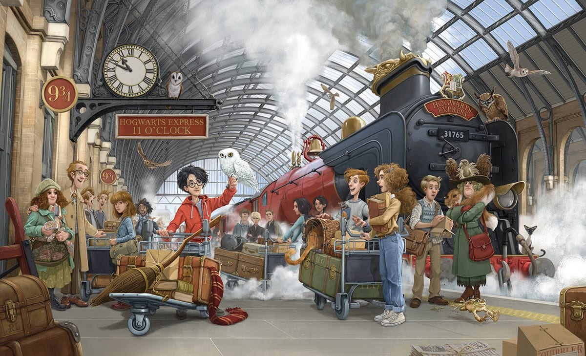
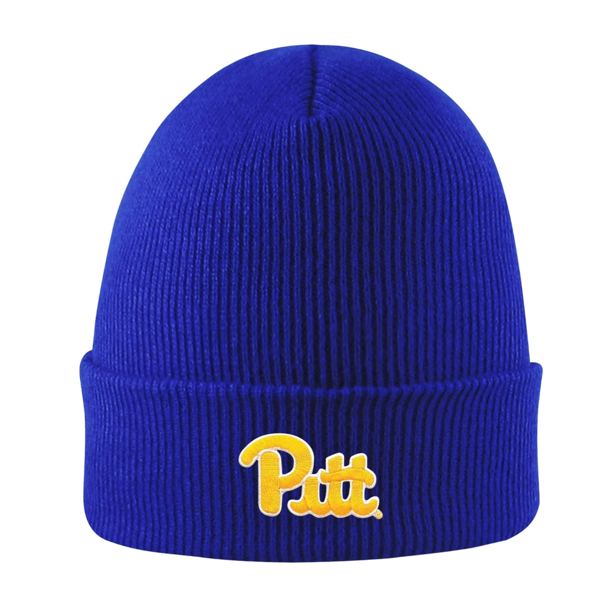

My Vocabulary Page
platform n(c) //
a long, flat raised structure at a railway station,
where people get on and off trains
1.1/ The train drew into the platform.
1.2/ What platform does it go from?
on a platform
1.3/ The couple met on a train platform.
1.4/ "I waited on the platform for the train."
1.5/ "I have been waiting on the platform for twenty minutes."
1.6/ We waited on the platform for the train to arrive from Boston.
1.7/ "Why do trains stop at stations even when there are no passengers
waiting on the platform?"
1.8/ "He stood on the platform clapping his hands."
1.9/ "Passengers on the platform immediately helped pull the student up."
1.10/ "We got on at the Fabron tram stop today en route to Nice St Augustin
train station and we observed a number of ticket inspectors on the platform
fining a woman who had just been taken off the previous tram. When the next
tram arrived we got on with the ticket inspectors and they checked the
date stamp on the back of our weekly tickets and handed them back."
walk onto a platform
1.11/ "This morning, I walked onto the platform to catch my train,
just as it pulled away."
1.12/ "A man was exposing himself on the train car, so I hopped
onto the platform to alert the police."
at a platform
1.13/ "How much time is allocated to a train at a platform?"
1.14/ "Nora and Mira waved goodbye at the platform when I was leaving Stockholm."
1.15/ "What was unusual about the girl he met at the platform?"
1.16/ "There were many shops at the platform that were serving snacks,
tea and even breakfast."
at/on platform 1
1.17/ The train now standing at platform 1 is for Leeds.
1.18/ The train at platform 3 is the 13.15 service to Liverpool.
1.19/ "The woman asked me to wait at platform 1."
1.20/ "It's proven that muggles can get past the barrier on Platform 9¾."
1.21/ "Explore the charm of the old waiting room on platform 1 in Penistone."
1.22/ "After all, the Hogwarts Express has always left on Platform 9¾."
arrive at a platform
1.23/ "The next train will arrive at platform one."
1.24/ "The train will arrive at platform 2 in three minutes."
1.25/ "A person arriving at a train platform is not sure if their train
is pulling into the station or pulling away."
depart from a platform
1.26/ "The train will depart from platform 2."
1.27/ The next train for Aberdeen will depart from platform 9.
1.28/ The next train to depart from platform 2 is the 10.30 for London Paddington.
1.29/ "The Eurostar departs from platform 15B, but do check this
before you make your way there."
leave a platform
1.30/ All southbound trains leave from platform one.
1.31/ "The train has left the platform."
1.32/ "The train leaves platform 2 every day at 9 am."
1.33/ "One train leaves every 15 minutes, and the other train departs
every 20 minutes."
a light rail platform, a tram platform
1.34/ "One day, while waiting on the light rail platform, a man
came up to me and proceeded to wave his hand in front of my face."
1.35/ "On the light rail platform, office workers and transit fans had
their cellphones pointed at the track as the trains approached."
1.36/ "I tapped my transit card at a reader on the light rail platform."
1.37/ "When taking Light Rail, tap your Octopus over the entry/exit
Octopus reader on the platform as required."
1.38/ "If you're travelling from Elmers End or Mitcham Junction,
touch in on a yellow card reader on the tram platform before getting on."
Platform Nine and Three-Quarters
1.39/ "Platform Nine and Three-Quarters (Platform 9¾) was a hidden
platform at King's Cross Station in London."
1.40/ "Platform Nine and Three-Quarters is the train platform from which
students board the Hogwarts Express, the scarlet steam engine that brings
students to and from Hogwarts."
(My Father's Back, Ziqing Zhu)
1.41/ "Just outside the station were some vendors. To reach them he had
to cross the lines, which involved jumping down from the platform and
clambering up again. As my father is a stout man this was naturally
not easy for him."
1.42/ "When next I looked out he was on his way back with some ruddy tangerines.
He put these on the platform before climbing slowly down to cross the lines,
which he did after picking the fruit up. When he reached my side I was there
to help him up. We boarded the train together and he plumped the tangerines
down on my coat. Then he brushed the dust from his clothes, as if that was
a weight off his mind."
see also: a train station
n(c) the raised part of the floor in a large room, from which
you make a speech or give a musical performance
2.1/ "There are ten senior boys seated on the hall's platform."
2.2/ "Something like Mirzapur would not look great if done on
a theatre platform, even with the same actors."
2.3/ The concert platform was high and almost semi-circular at the front.
take the platform
2.4/ Speaker after speaker took the platform to denounce the policy.
2.5/ "As I took the platform to preach, rain began to bucket down."
2.6/ "They took the platform to present their design ideas and project
on urban development of racecourse area in Coimbatore."
mount the platform
2.7/ "The king mounted the platform to loud cheers."
2.8/ He mounted the platform and began to speak to the assembled crowd.
2.9/ "She recalled the prize days, when she mounted the platform to
receive her little crowns, with her hair in long plaits."
on a platform
2.10/ This brilliant young violinist has appeared on concert platforms
all round the world.
2.11/ "Speaking on a platform that is surrounded on all side by the audience
is known in theatre as presenting in the round. It's quite a different
experience presenting to an audience that you sometimes cannot see!"
onto a platform
2.12/ I slipped as I stepped onto the platform.
2.13/ "Other people got up onto the platform to speak."
2.14/ The speakers came onto the platform in order of precedence.
2.15/ Coming onto the platform now is tonight's conductor, Jane Glover.
2.16/ "A speaker walked onto the platform wearing a rugged jacket
and hiking boots."
down from a platform
2.17/ "I just stepped down from the platform when a youngish guy in a lumberjack
shirt and a peak cap came over and said I really enjoyed your talk."
2.18/ "As I walked down from the platform, I walked over to a corner
in the front of Encounter Church and fell on my face."
share a platform
2.19/ Representatives of both parties shared a platform.
2.20/ Union leaders shared the platform with business leaders in a debate
on the future of the industry.
see also: a podium, a rostrum, a dais
n(c) a raised level surface, e.g. one that equipment stands on or is operated from
3.1/ The table and chairs were on a raised platform.
a work platform
3.2/ "Here are some of the duties of an operator when they lift
workers on a work platform."
3.3/ "A construction worker is 15 meters off the ground, adjusting
a light fixture on an elevated work platform."
3.4/ "When craftsmen work on a mobile work platform, they can continuously
adjust the height to avoid strenuous work heights and unsafe work positions."
3.5/ "Working at height means all work that involves a risk of falling
or work carried out at a height of more than two meters on any work platform
other than fixed platforms and those equipped with handrails."
a viewing platform
3.6/ "The viewing platform is open daily, 7.30am to 10.30pm."
3.7/ "We had a view of the city from the viewing platform of Tokyo Tower."
3.8/ "The viewing platform at a height of 150 meters offers a spectacular
view over Vienna and delights with a 360-degree panoramic view."
3.9/ "Sky Terrace 428, standing at 428 metres above sea level,
is the highest viewing platform in Hong Kong offering a stunning
panoramic view across the Hong Kong."
an oil platform, a gas platform
3.10/ "A drill on an oil platform descended 1,500 feet below sea level."
3.11/ "I mentioned earlier that when you work on an oil platform, you also
live on the platform, and with a helicopter commute, you can see why."
a launch platform
3.12/ "The billionaire also spent some time talking about how magnificent
the hours-long process of setting up the rocket on the launch platform looks."
n(c) the type of computer system or smartphone you are using,
in relation to the type of softwareyou can use on it
4.1/ This new personal banking software can be used with any Windows platform.
a mobile platform
4.2/ Both Apple's iOS and Google's Android mobile platforms now have
emoji keyboards built into their software.
4.3/ The prevalence of smartphones has resulted in the migration
of company information to mobile platforms.
4.4/ "Browser PC players might refuse to play games on a mobile platform
if they found the available games are less challenging than browser PC games."
4.5/ "Make sure your content is available on every mobile platform
and device. Every customer touch point must be included."
discipline n(u) //
the practice of training people to obey rules and orders and
punishing them if they do not; the controlled behaviour or situation
that is the result of this training
1.1/ There should be tougher discipline in schools.
1.2/ "Old-school discipline doesn't work any more - and shouldn't."
learn discipline
1.3/ Students have to learn discipline.
1.4/ "We treat children too softly to succeed. If they don't learn
discipline at school, they'll never be worth hiring."
1.5/ "You need to learn discipline at school in order not to
get into trouble when you become an adult "
need discipline
1.6/ We need better discipline in our schools.
1.7/ She believes children need discipline.
have strict/poor discipline
1.8/ The school was criticized for having very poor discipline.
1.9/ "Our high school has strict discipline, policies and processes
to hold students accountable."
[of a person] have good/poor discipline
1.10/ "We should have good discipline at home."
1.11/ "Our students have good discipline at school."
1.12/ "If the people around you have good discipline at work,
they are responsible and successful in their respective areas."
1.13/ "Some students have poor discipline in class, and some students
often don't attend for no reason."
keep good discipline
1.14/ She keeps good discipline in class.
1.15/ "A teacher needs to keep good discipline in class."
1.16/ "I tell young teachers who are determined to dissent from some
of the Draconian aspects of the current orthodoxy that the best form
of protection is to be incredibly good at what you do and keep
good discipline in class." (Jonathan Kozol)
1.17/ "I have to find a balance to ensure that they keep good discipline."
maintain discipline
1.18/ The teacher was unable to maintain discipline.
1.19/ "Maintaining discipline is important in the organization."
1.20/ Several of the teachers were ineffectual at maintaining discipline.
1.21/ Maintaining classroom discipline is the first task of every teacher.
1.22/ "How can knowing school guidelines for discipline procedures help
a teacher to maintain good discipline in the classroom?"
1.23/ "The highest judicial authority in the country has recognized
the right of the employers to maintain discipline in the industry
and to take proper action in a fair manner against erring employees
who indulge in misconduct."
impose discipline (on somebody/something)
1.24/ Strict discipline is imposed on army recruits.
1.25/ "Parents should impose strict discipline on their children."
1.26/ "That project manager is known to impose strict discipline on her employees."
1.27/ They submitted to the discipline imposed by their leaders.
instill discipline (in/into somebody)
1.28/ We need someone who is good at instilling discipline.
1.29/ In some of these schools, army-style drills are used to
instil a sense of discipline.
1.30/ "At the best ICSE Prep School in Patiala, we instill discipline in students."
1.31/ "SPIS focuses on punctuality in order to instill discipline in students."
1.32/ "I want to give you some tips on how to instill discipline into your team."
1.33/ "We strive to encompass all efforts that instil students with
discipline, punctuality and all important life skills as a part of our
central educational purpose."
enforce/promote discipline
1.34/ The new teacher had failed to enforce any sort of discipline.
1.35/ "How do I enforce discipline in the workplace?"
1.36/ "One of the most important things that managers can do to promote good
discipline in the workplace is to be consistent with their disciplinary actions."
lack discipline
1.37/ Modern schools lack discipline.
1.38/ "They argue that Abe's government lacks discipline and coherence."
(a) lack of discipline
1.39/ He's always harping on about lack of discipline.
1.40/ "A team of experienced players often lose the match because of a lack
of discipline in the team, but a disciplined team can win an impossible match."
(other examples)
1.41/ He quickly brought order and discipline to the regiment.
1.42/ The school has a reputation for high standards of discipline.
1.43/ It's unfair to dismiss somebody for a single breach of discipline.
1.44/ The new headmaster tightened discipline in the school.
1.45/ Problems arise if the parents' approach to discipline is inconsistent.
1.46/ "Whoever heeds discipline shows the way to life, but whoever
ignores correction leads others astray." (Proverbs 10:17)
n(u) the ability to control your behaviour or the way you live, work, etc.
2.1/ "Lack of discipline will certainly fail you."
2.2/ Her determination and discipline were admirable./
need discipline (to do something)
2.3/ "You need discipline to succeed in life."
2.4/ "I will need discipline to take steps to achieve that."
require/take discipline
2.5/ Learning a foreign language requires discipline.
2.6/ "Losing weight takes discipline and planning, especially
if you want long-term results."
it takes(/requires) discipline to do something
2.7/ "It requires discipline to succeed."
2.8/ It takes great discipline to learn a musical instrument.
2.9/ "It takes discipline to spend even thirty minutes reading
a physical book these days."
2.10/ "It takes discipline not to let social media steal your time."
2.11/ "It takes discipline to read the Bible every single day without fail."
it is good discipline to do something
2.12/ It is good discipline to learn to delegate.
2.13/ "It is good discipline to let no word slip past in your reading
which you do not understand."
have/get no discipline
2.14/ "She has no discipline in her life."
2.15/ "Someone has no discipline in their diet."
2.16/ He'll never get anywhere working for himself - he's got no discipline.
have discipline to do something
2.17/ "I have no discipline to lose weight or manage my time."
2.18/ "I don't have enough discipline to develop discipline."
2.19/ "Once you've found your project, you need to have discipline to finish it."
2.20/ "I feel like I could do better but I just don't have enough
discipline to do so."
2.21/ "In the study, 78 percent of doctors felt obese people didn’t have enough
discipline to lose weight, and 52 percent felt they weren’t motivated enough."
see also: n(u) self-discipline
n(c) a method of training your mind/body or of controlling
your behaviour; an area of activity where this is necessary
3.1/ "Do you think boxing is a good discipline?"
3.2/ "Many martial arts disciplines focus on the practical application
of self-defense tactics in real-world situations."
a discipline for something
3.3/ Yoga is a good discipline for learning to relax.
3.4/ "Yoga is one of the most practiced disciplines for relaxing the
most commonly affected areas, such as the cervical and lumbar areas."
a discipline for somebody to do something
3.5/ "Staying focused is a good discipline to develop for any entrepreneur."
3.6/ "I have seven easy disciplines for you to begin practicing and
repeating daily to make personal growth a focus of your life."
3.7/ "We have prepared this year's devotional to highlight 21 disciplines
for you to understand and practice."
n(c) an area of knowledge; a subject that people study
or are taught, esp in a university
4.1/ When did sociology emerge as a distinct discipline?
4.2/ Within a discipline there may be more than one school of thought.
4.3/ Students are to be tested on the three core disciplines:
mathematics, English and science.
4.4/ Scholars from various disciplines have been working on these problems.
4.5/ Applications are welcome from candidates with a degree in
a mathematics or other relevant discipline.
an academic discipline
4.6/ They established psychology as an academic discipline.
4.7/ The new recruits were drawn from a range of academic disciplines.
4.8/ "HK Metropolitan University actively considers application for
establishment of Applied Science University, aims to preserve
diverse academic disciplines."
a range of disciplines
4.9/ The university offers a wide range of disciplines.
4.10/ "This allows them to delay specialising for one or two years
while they study a range of disciplines."
4.11/ "At Winchester we have a wide variety of courses across a number of
subjects and disciplines for you to explore."
across disciplines
4.12/ There is a lack of communication across disciplines.
4.13/ "Why do you need to be able to work across disciplines?"
4.14/ "With this situation,, students are required to learn across disciplines
and not be content with the knowledge they receive in their specific majors."
4.15/ "Competition and cooperation in academia are not new phenomena
in the twenty-first century, but in recent years they have taken on greater
significance in science and higher education. Currently, we are witnessing
an extension and evolution of news forms of competition and cooperation
across different disciplines and areas of research as well as in various
national science and higher education systems."
a course of a discipline
4.16/ "When studying a course of a discipline, useful information about it
and the teacher can be found in the syllabus or the course program (syllabus)."
4.17/ "Under the new structure, students will be able to attempt courses
of different disciplines in their first year of university education
with a view to identifying their aptitude and abilities before
deciding on their majors."
discipline v(t) //
punish somebody for something they have done
discipline somebody
5.1/ Should unions discipline members who take unofficial action?
5.2/ "Teachers, how do you discipline students who won't listen?"
5.3/ "Those whom I love, I reprove and discipline, so be zealous
and repent." (Revelation 3:19)
discipline somebody for something
5.4/ The officers were disciplined for using racist language.
5.5/ "I was disciplined for being late to work on several occasions."
5.6/ Several players had to be disciplined for violent behaviour.
5.7/ "The key point is that we discipline students for their actions
and not their associations."
5.8/ A spokesman confirmed that Lewis will be disciplined by
the club for his outburst.
5.9/ A senior army officer has been disciplined for revealing secret
government plans to the media.
be disciplined by somebody
5.10/ "Next time I'm going to tell you how I was disciplined
by the principal in grade 3."
5.11/ "I was disciplined by my parents with a belt with pants and
panties down, bent over a chair, bed or lap."
be disciplined by something
5.12/ I was disciplined by getting privileges taken away.
5.13/ "I was disciplined by corporal punishment."
5.14/ "When children are not properly trained, unfortunately,
they may have to be disciplined by corporal punishment."
see also: punish
v(t) teach somebody to behave in a controlled way
discipline somebody
6.1/ Dieting is a matter of disciplining yourself.
6.2/ "How do you discipline a kitten that doesn't listen?"
6.3/ "Discipline your son, and he will give you rest; he will
give delight to your heart." (Proverbs 29:17)
6.4/ "But I discipline my body and keep it under control, lest after
preaching to others I myself should be disqualified." (1 Corinthians 9:27)
discipline somebody to do something
6.5/ "Just discipline your boys to refrain from fighting and be humble."
6.6/ "Should I discipline my dog to stop biting strangers?"
6.7/ "To discipline a dog to stop barking, ignore the barking initially."
6.8/ "How do I discipline my cat to stop pooping in my bed?"
discipline yourself to do something
6.9/ I'm trying to discipline myself to eat less chocolate.
6.10/ He disciplined himself to exercise at least three times a week.
6.11/ "How can I discipline myself to study hard?"
see also: teach, train
describe v(t) //
say or write what somebody or something is like
describe somebody
1.1/ Could you describe your attacker?
1.2/ The police asked her to describe the thief.
1.3/ "Can you describe your grandmother in five words?"
1.4/ "I cannot find the words to describe the amazing person
that Kevin Webber is."
describe something
1.5/ "Can you describe your lost wallet?"
1.6/ " How would you describe the picture?"
1.7/ "How does the Bible describe the end of the world?"
1.8/ "From where does the poet describe the view of the city?"
1.9/ "Let me try to describe that moment."
1.10/ "Describe the case of Ernesto Miranda and explain the U.S.
Supreme Court's decision in this landmark case."
1.11/ "The player describes the image, and the other players try to
draw it based on what they hear."
describe a situation
1.12/ "Describe a situation when you helped someone."
1.13/ "These data however do not describe the situation of immigrant women."
1.14/ "There are many words to describe the situation of the middle class."
1.15/ "Describe the situation for Dutch Jews at the time the
Frank family went into hiding."
describe + wh-clause
1.16/ She described briefly what happened.
1.17/ Describe how you did it.
1.18/ Let me describe how it happened.
1.19/ He goes on to describe vividly how Lincoln was assassinated.
1.20/ He goes on to describe very vividly how Caesar was stabbed to death.
1.21/ "Please describe shortly why you would like to participate
in this EEG course."
1.22/ "You may also describe why you want this job and the professional
opportunities it offers to you."
1.23/ "I won't ever be able to explain or describe why I went through
what I did, but I know I had to give it all up to God completely."
describe that ...
1.24/ "Previously, I described that we live in two worlds,
the external and the inner worlds."
1.25/ "How can I describe that I was impressed by a firm in a professional way?"
1.26/ "How do I describe that I have studied other courses along with
my degree in BE in an interview?"
1.27/ "I try to describe that we are translators more than editors
- translating spoken language into written language."
describe something by words
1.28/ "I cannot describe my feelings by words."
1.29/ "I can't describe by words what I feel when I listen this song."
1.30/ "A viridarium was described by words as a tree garde."
describe something in words
1.31/ "Describe the picture in your own words."
1.32/ "Describe the Opium Wars in your own words."
1.33/ "Describe your parents in 100 words."
1.34/ "I cannot describe my feelings in words."
1.35/ "I cannot describe my love for you in words."
1.36/ "Attempting to describe what I saw in words is useless."
1.37/ "Describe in words or by drawing a picture, the most exciting
part in the storyline of a play."
describe somebody/something by doing something
1.38/ "Let them describe it by talking first, then writing things down."
1.39/ "You can also try talk-to-text writing, where you will describe
what you see or want to describe by speaking it out first."
1.40/ "Describe the branches, leaves, bark, flowers, fruit and roots of
the tree in your own words. You can even describe it by drawing a picture."
describe somebody/something in detail
1.41/ He described the painting in detail.
1.42/ Their daily lives are described in detail.
1.43/ The next section describes our findings in detail.
1.44/ "How would you describe yourself in detail, including strengths,
weaknesses and unique qualities you have?"
1.45/ He insisted on describing his operation in graphic detail
while we were eating lunch.
be described in something
1.46/ This process is fully described in section three of the book.
1.47/ "The current political situation in Vietnam is described in chapter 8."
1.48/ "The phenomenon is described in her new book, Going Tactile: Life at
the Limits of Language (2024, OUP)."
describe somebody/something to somebody
1.49/ Can you describe him to me?
1.50/ "Can you describe your wife to me?"
1.51/ Describe to us how you felt when you won.
1.52/ "How do you describe the view to someone who can't see?"
1.53/ Please describe to the court exactly what you saw.
1.54/ "I want you to describe the party to me."
describe somebody/something for somebody
1.55/ They described for us exactly what happened.
1.56/ "Data listed in tables should not be simply repeated in the text,
but major findings and themes should be described for readers."
describe somebody/something as + adj
1.57/ She described Gary as shy.
1.58/ The man was described as tall and dark, and aged about 20.
1.59/ Jim was described by his colleagues as 'unusual'.
1.60/ The area I grew up in is described as semi-rural.
1.61/ Observers have described the situation in the country as 'serious'.
1.62/ The shirt was variously described as 'pink', 'salmon' and 'rose'.
1.63/ "The situation in northern Gaza is described as desperate,
with severe food, water and necessities shortages."
describe somebody/something as something
1.64/ "I am described as a good person."
1.65/ "I am described by my boss as a superb techie."
1.66/ "I am described as a communist who wants to return us all back to 1917."
1.67/ "She was described as the most beautiful little girl."
1.68/ "Wendy was described as a confident mother."
1.69/ "Peter Pan was described as a star so many times."
1.70/ " The suspect was described by police as a light-skinned male
wearing a black face mask, black-and-white sneakers and a very
distinctive gray backpack.
1.71/ "Gibraltar is described as a gentle giant with a wild side."
1.72/ "Some 150 years ago, Hong Kong was described as a barren rock
with hardly a house upon it."
words cannot describe ...
1.73/ Words cannot describe what I felt at that moment.
1.74/ Words cannot describe our feelings at that moment.
1.75/ "No words can describe how wonderful you are."
1.76/ "There are no words that can describe the love I feel for you."
see also: explain, elaborate, illustrate, express, show
v(t) describe a circle(/an arc/a curve/a shape):
make a movement that has a particular shape; form a particular shape
2.1/ The shark described a circle around the shoal of fish.
2.2/ Her hand described a circle in the air.
2.3/ "The hand describes a square shape in the air."
2.4/ "The river describes a curve through the canyon."
2.5/ The road describes a long loop around the town.
2.6/ "The road from the airfield to the highway describes a gentle crescent."
see also: form a circle, move in a circle
interact v(i) //
communicate with somebody, esp while you work, play or spend time with them
1.1/ Playing a game is a way for a family to interact.
1.2/ "I don't interact at school or talk to anyone."
interact with somebody
1.3/ He interacts very well with other children.
1.4/ He does not interact well with the other students.
1.5/ We interact with our customers over the phone.
1.6/ Dominique's teacher says that she interacts well with the other children.
1.7/ Teachers have a limited amount of time to interact with each child.
1.8/ "How can I interact with my classmates more this school year?"
1.9/ "The date had been fun, besides that I didn't know how to
interact with the girl I was on a date with."
1.10/ "Practice active listening when interacting with people
from diverse backgrounds."
interact with each other
1.11/ "Why don't we interact with each other anymore?"
1.12/ "Social interaction or connection is the process where two
or more people interact with each other in a social setting."
two (or more) people interact
1.13/ The staff restaurant is where staff interact socially.
1.14/ It's interesting at parties to see how people interact socially.
1.15/ "If two employees have a conflict with each other, a manager might
want to split people up, managing how these two people interact during
the day by adjusting their work schedules or by switching desks around."
interact shortly/briefly
1.16/ "The animals showed well. They even interacted shortly
with our whale watching boat."
1.17/ "I interact briefly with colleagues, friends and family most days."
1.18/ "As I work the crowd, I interact briefly with a series of students
just as any teacher might during Guided Practice."
interact barely/badly
1.19/ "I interact barely with people at work."
1.20/ "They trained and interacted barely with each other."
1.21/ "I'm not a leader, not a King, I interact badly with people."
interact enthusiastically/proactively
1.22/ "I interact proactively with people from diverse backgrounds."
1.23/ "I interact enthusiastically with clients on the sales floor,
in the fitting room, and as a highly efficient cashier."
interact at a minimal(/minimum) level
1.24/ "You interact at a minimal level, so you don't let their opinions define you."
1.25/ "Who should attend? Colleagues who interact at a minimum
level with one event or meeting per year."
1.26/ "The veteran is still able to function and interact at a minimal
level with others."
interact with something
1.27/ The only thing he interacts with is his computer!
1.28/ Young people today are used to interacting with content on the web.
1.29/ You were shown this ad because you interacted with a post
about beauty products.
1.30/ Once you click on the post you will be taken to a special site where
you will be asked to take surveys and interact with other advertising media.
v(i) if one thing interacts with another, or if they interact,
they affect each other
interact with something
2.1/ Perfume interacts with the skin's natural chemicals.
2.2/ How will the drug interact with other medications?
2.3/ This hormone interacts closely with other hormones in the body.
2.4/ The immune system interacts with both the nervous system and the hormones.
2.5/ These devices allow the robot to physically interact with its environment.
2.6/ "This is a short experiment on how Light Coke interacts with
Mentos inside the human body."
2.7/ "A 10g sample of iron interacts with oxygen to form 18.2g of ferric oxide."
two (or more) things interact
2.8/ We are studying how these two chemicals interact.
2.9/ "When ammonia and bleach interact, they produce chloramine gas."
2.10/ We learned about how people and their environment interact.
2.11/ "Special Relativity was a groundbreaking shift in understanding
how space and time interact."
2.12/ "Criminology must grapple with how discourses on crime and poverty
interact to shape both societal attitudes toward crime and the actual
administration and enforcement of laws."
beanie //
a small hat that fits closely to the head
1/ "At each session there will be a raffle to win a Pitt beanie!"
2/ "A beanie is a knitted round cap that helps to keep your head
warm and comfortable and very popular right now."
3/ If you're after a simple, stylish beanie to keep you warm
this winter, then this is the one for you.
a knitted beanie, a handknit(/hand-knitted) beanie
4/ She wears a knitted beanie and scarf.
5/ "I chose to make a hand-knitted beanie for my grandma."
6/ "The Coal Maizy is a handknit beanie, made of thick and cozy acrylic,
unbelievably soft to the touch."
a knit cap
7/ "A knit cap, colloquially known as a beanie, is a piece of
knitted headwear designed to provide warmth in cold weather. It usually
has a simple tapered shape, although more elaborate variants exist.
Historically made of wool, it is now often made of synthetic fibers."
wear a beanie
8/ "I love wearing a beanie even when it's warm."
9/ "I love when Dan wears a beanie on the show."
10/ "I always wear a beanie when I go in the snow."
11/ "I wear a beanie in winter, and I have a wool hat if I wanna
look fancy in winter."
12/ "To fend off the winds, snow, and other surprise weather situations,
a beanie for winter is a must unless you want to freeze your ears off."
(a beanie) keeps my ears warm
13/ "I keep my ears warm with a beanie in winter."
14/ "A beanie keeps my ears warm and is also fashionable at the same time."
knit a beanie, handknit a beanie
15/ "I would knit a beanie for my baby granddaughter Luka as winter is coming."
16/ "Last year I knitted a beanie for my daughter and similar one for myself."
17/ "She hand-knitted a beanie for our newborn baby last year."
18/ "I will handknit a beanie for you using the colors and style you choose."
see also: a bobble hat, a brimless cap, a shower cap, a swimming cap
respond v(i) //
give a spoken or written answer to somebody/something
1.1/ I asked him his name, but he didn't respond.
1.2/ I asked her what the time was, but she didn't respond.
1.3/ She wasn't sure how he was likely to respond.
1.4/ "He says good morning and I can barely respond."
1.5/ "This is so emotional. I can hardly respond."
1.6/ How should I respond if someone says, "You know everything"?
1.7/ You have to listen to what someone says and respond appropriately.
be fast/slow to respond
1.8/ Terry was, as usual, slow to respond.
1.9/ "I am fast to respond unlike other freelancers."
(speech)
1.10/ "I'm not sure," she responded.
1.11/ He immediately responded, "Why me?"
1.12/ To every question, he responded "I don't know."
1.13/ Today I was asked "Is that a real service dog?"
I responded "Yes and a real good one too."
respond to somebody/something
1.14/ "Please respond to me as soon as possible."
1.15/ "She never responses to me but she responses to everyone else."
1.16/ "I don't know how to respond to her when she keeps pressing me."
1.17/ She never responded to my letter.
1.18/ Dave didn’t respond to any of her emails.
1.19/ The government did not respond to our questions.
1.20/ He responded politely to her questions.
1.21/ "We laughed when we realized that we had responded identically
to one particular question."
1.22/ "I know, I can barely respond to threads."
1.23/ "At a time I can barely respond to posts."
1.24/ They usually respond to email quickly.
1.25/ "I can hardly respond to my mom's messages on time."
1.26/ I want to respond to something that Norman said.
1.27/ 127 students responded to the survey.
1.28/ More than fifty people responded to the advertisement.
1.29/ The company did not respond to requests for an interview.
be/write responding to something
1.30/ I wrote responding to their call for feedback.
1.31/ "I read to write responding to sources."
1.32/ "We are responding to your letter dated April 2 about the
proposed urban camping ban."
respond within five working days
1.33/ "We usually respond within five working days."
1.34/ We try to respond to complaints within 48 hours.
1.35/ The federal agency failed to respond to the petition within a reasonable time.
respond by letter/phone/email
1.36/ You can respond by email or phone.
1.37/ "We'll respond by email only (in the first instance) to your
enquiry within 24 business hours."
respond via something
1.38/ If you see an opportunity that interests you, you can respond
immediately via the link.
1.39/ "Unless the sender has specifically requested a call to
confirm the invitation, it's acceptable to respond via email."
respond with something
1.40/ She responded with a smile.
1.41/ He responded with a question.
1.42/ She responded to his remarks with feigned amusement.
1.43/ "Ask me a question and I'll respond with a vague, ambiguous answer."
1.44/ "To gain customers' trust, CSRs must respond with empathy, but some
agents find this difficult." (a CSR: a customer service representative)
1.45/ "Of the 43 municipalities, 19 failed even to respond with
a vague statement of good intentions."
respond by saying something
1.46/ "I responded by saying that I have a desire to talk more in detail on Monday."
1.47/ "He responded by saying that for himself and other victims
they were all the same."
1.48/ "Someone asked a question, and the seminar speaker responded by
talking about what was on the front page of the NYT that day."
respond that ...
1.49/ She responded that she hadn't had any complaints.
1.50/ He responded that he didn't want to see anyone.
1.51/ When asked about the company's future, the director responded
that he remained optimistic.
1.52/ When the tax office wrote to me demanding unpaid income tax,
I responded that I had been working abroad since 1998.
see also: v(i) reply, n(c,u) response
v(i) do something as a reaction to something that somebody has said or done
2.1/ "How do you want me to respond?"
2.2/ "Respond quickly whenever a position becomes available."
2.3/ "How to respond quickly when your world is changing."
2.4/ The government needs to listen to the public and respond accordingly.
respond to somebody
2.5/ "Countries have responded to refugees in a number of ways."
2.6/ Mother Theresa was once asked, "How do you respond to the starving
people in your midst?" She replied, "Well, we pray for them (long pause),
and then we feed them." And so does Jesus.
2.7/ "God used someone's wound in the past to help them respond
to suffering people with greater empathy and compassion."
2.8/ "Unlike that judge, God responds quickly to those who cry out for help."
respond to something
2.9/ How did she respond to the news?
2.10/ How did they respond to the news?
2.11/ Responding to the news, Mr Watt appealed for calm.
2.12/ She responded angrily to the criticisms.
2.13/ "Beloved, God responds quickly to the choices we make."
2.14/ The president responded angrily to the charge that she had
lost touch with her country's people.
2.15/ Workers may respond negatively to management decisions if
they are not consulted.
2.16/ We do not have a strategy. We merely respond to ideas from local people.
respond to a call
2.17/ Responding to calls for a more diverse canon, we are reviewing our curriculum.
2.18/ "Last fall, when the Taliban government came under attack, Mr. Razaq
was one of thousands who responded to the call for holy war."
respond to a demand
2.19/ "What to do if the debtor does not respond to a demand for payment?"
2.20/ Companies are responding to the growing demand for no-sugar products.
respond to a need
2.21/ "How can humans cooperate to respond to a need for resources?"
2.22/ "The Tsar also failed to respond to the needs of the people."
2.23/ "NARO understood and quickly responded to refugees' needs."
2.24/ Part of our strategy is to go into neglected markets and
respond to these needs.
2.25/ "On the first Christmas, God responded to our need with the perfect gift."
2.26/ "The Hong Kong Special Administrative Region Government has responded
to the needs of the public and the society in an unprecedented manner."
2.27/ "Why has the housing policy in the Slovak Republic failed to respond
to the needs of the market?"
respond to a change
2.28/ The public is responding positively to these changes.
2.29/ How a plant responds to an unfavourable change in its environment
often depends on its health at the time.
respond to treatment
2.30/ This disease doesn't generally respond to treatment.
2.31/ It remains to be seen whether the cancer will respond to treatment.p>
respond to emergencies
2.32/ The police respond to emergencies in just a few minutes.
2.33/ "If we know exactly how to respond to emergencies, we can take
appropriate measures to prevent a potentially dangerous situation."
respond by doing something
2.34/ "She responded by shrugging her shoulders."
2.35/ He responded by marching off and slamming the door behind him.
2.36/ The US responded by sending troops into Laos.
2.37/ The government responded by banning all future demonstrations.
2.38/ He responded to the report by calling on schools to do more to tackle bullying.
2.39/ The government responded by tightening the law on gun ownership.
2.40/ He promptly responded to the threat by issuing one of his own.
respond with something
2.41/ The audience responded with enthusiasm.
2.42/ Villagers responded with offers of help.
2.43/ The authorities responded to the protests with force.
2.44/ The Blues responded with a goal from Tim Janz.
2.45/ "Yesterday, Israel responded to Gazan rocket attacks with airstrikes."
respond in kind (= respond in the same way)
2.46/ "Do racial ninorities respond in the same way to
mainstream beauty standards?"
2.47/ The terrorists declared all-out war on the government
and the government responded in kind.
2.48/ "We will not respond in kind to the painfully familiar
rhetoric that we have heard in years past."
2.49/ "The natural response of the fallen man is to respond in kind, to be nice
to those who treat him well and to be mean to those who treat him badly."
respond differently(/indifferently) to something
2.50/ "I respond differently to different greetings."
2.51/ Consumers respond differently to different types of packaging.
2.52/ "If you and I respond differently to the same moral dilemma, we want
to understand why because that can help us understand the psychology of
moral judgment and more generally, how morality works."
2.53/ "Men and women do not respond identically to consuming alcohol."
2.54/ "After China Central Television accused Apple of offering
discriminatory after-sales services in China, the company responded
indifferently to consumers' complaints."
see also: v(i) react
likely //
if something is likely, it will probably happen or is expected
1.1/ I suppose that might happen but it's not very likely.
be likely to do something
1.2/ "I am likely to forget your name."
1.3/ If I don't write it down, I'm likely to forget.
1.4/ "I am likely to be late home this evening."
1.5/ "I am likely to be late this evening."
1.6/ They're hardly likely to get home before ten.
1.7/ This is one of the strangest art galleries you're ever likely to see.
1.8/ It is likely to remain cold all weekend.
1.9/ There is likely to be heavy snowfall.
1.10/ The beetles are likely to cause damage.
1.11/ Tickets are likely to be expensive.
1.12/ "My advice is that you plan ahead your visit to Caminito del Rey,
because tickets are likely to be sold out, especially in weekends."
1.13/ This match was never likely to be a classic.
1.14/ This is likely to cause problems further down the line.
1.15/ Economists warn that this willingness to lend is not likely to continue.
be more(/most) likely to do something
1.16/ Older people are more likely to die of the disease.
1.17/ Women are more likely to have the condition than men.
1.18/ Severe storms are most likely to occur in October and November.
1.19/ You are less likely to have problems if you plan ahead.
1.20/ "I am less likely to deny my suffering when I learn how God uses
it to mold me and draw me closer to him."
1.21/ "When you are paraphrasing, you will be least likely to plagiarize
if you only paraphrase the parts that are most relevant for your own paper."
be ten times more likely to do something (than ...)
1.22/ Workplaces that scored highest for employee satisfaction were
38% more likely to have above-average productivity.
1.23/ "Gay and bisexual men are 40 times more likely to have HIV than other men."
1.24/ "Health care workers (HCWs) are more than ten times more likely
to be infected with coronavirus infectious disease 2019 (COVID-19)
than the general population."
it is likely that ...
1.25/ It's hardly likely that they'll refuse.
1.26/ It is quite likely the discussion may never take place.
1.27/ It's quite likely that we'll be in Spain this time next year.
1.28/ It's very likely they already have their own website.
1.29/ It is highly likely that the factory will have to close.
1.30/ It is entirely likely that the company will make another offer.
1.31/ It's more than likely that the thieves don't know how much it is worth.
(before noun)
1.32/ She made a rough estimate of the likely cost.
1.33/ The rising cost of housing is the most likely culprit.
1.34/ She seems the most likely candidate for the job.
1.35/ "Manchester City is the most likely winner of the Premier League."
1.36/ "The didjeridu is a likely contender for the title of the world's
oldest wind instrument."
a likely outcome
1.37/ "Which of the following is a likely outcome of job dissatisfaction?"
1.38/ What's the likely outcome of this whole business?
1.39/ We need to talk honestly about the likely outcomes of these different choices.
a likely cause of something
1.40/ What is the most likely cause of the infection?
1.41/ "Non-payment of child support is a likely cause of poverty
for some families in Jordan."
a likely result/consequence of something
1.42/ "Destruction is a likely result of war."
1.43/ "Mark J. Gazirowski looked at the likely results of the election."
1.44/ We discussed the likely consequences of the vote.
a likely explanation/reason for something
1.45/ "A Thames Valley police spokesman confirmed that suicide was being
considered as a likely reason for the driver stopping on the crossing."
1.46/ "One of the mostly likely reasons for bankruptcy in the U.S.
is unpaid medical bills."
1.47/ The most likely explanation for these changes is a decline in insect numbers.
a likely scenario
1.48/ "In the most likely scenario, the government will be established
by the parties belonging to the present coalition."
1.49/ We'd be fine if someone gave us $200,000 but that, unfortunately,
is not a likely scenario.
see also: unlikely, possible, probable, expected, certain
likely adv //
probably
2.1/ "It will likely rain."
2.2/ She will likely need surgery.
more likely
2.3/ "She would more likely marry me."
2.4/ "I would more likely marry a girl of my choice."
2.5/ They might ask for help or, more likely, just give up.
2.6/ "She will more likely go to college as well."
very likely, most likely
2.7/ The illness was caused, most likely, by a virus.
2.8/ "I will very likely run out of money very soon, but I'm not sure
when and if unemployment will cover my expenses."
as likely as not (= very likely)
2.9/ "As likely as not, he could be dead."
2.10/ As likely as not she's forgotten all about it.
2.11/ As likely as not, she'll end up in court over this problem.
feel the cold phrase //
feel the cold(/heat): suffer because of cold(/hot) weather
1/ "I don't feel the cold."
2/ "Hot girls never feel the cold."
3/ When we moved to London, I really felt the cold.
4/ When the adrenaline kicks in, you won't feel the cold.
5/ She doesn't really feel the cold, so she never wears a coat.
6/ He was shivering as he took off his wet clothes, but insisted
that he didn't feel the cold.
feel the cold more
7/ Old people tend to feel the cold more.
8/ As you get older, you tend to feel the cold more.
9/ "We could feel the cold more now than before."
10/ "I found I felt the cold more when I was on chemo."
11/ "I felt the cold more when I was tired."
feel the heat
12/ "I don't feel the heat in summer."
13/ "I felt the heat a lot like everyone."
14/ "I feel the heat more these days."
15/ "Do fat people feel the heat more than lean people?"
16/ "If your mom feels the heat more than she remembers, it's possible
that is because her body is not as young as it used to be."
remark: 'feel the cold' means to get cold quicker and more often
than most people, while 'feel cold' means to get cold.
expect v(t) //
think or believe something will happen, or that somebody will do something
1.1/ "This is not what I expect."
1.2/ "Will Bill be there?" "I expect so."
expect something
1.3/ The company is expecting record sales this year.
1.4/ Change often happens when you least expect it.
1.5/ We are expecting a lot of applicants for the job.
1.6/ We are expecting a rise in food prices this month.
1.7/ I do not necessarily expect an easy answer to this question.
1.8/ Some people expect instant gratification.
expect something from somebody/something
1.9/ Don't expect sympathy from me!
1.10/ "I don't expect anything from you."
1.11/ "What can I expect from you?"
1.12/ I expect punctuality from my students.
1.13/ "My parents expect the best from me."
1.14/ "Do I know what is expected from my work?"
1.15/ This kind of behaviour is to be expected from a two-year-old.
1.16/ "When you don't expect anything from anybody, you live much better."
expect something of somebody/something
1.17/ "Attention to detail is expected of you."
1.18/ That's not the sort of behaviour I expect of you!
1.19/ "Punctuality is expected of you in this company."
1.20/ "At school, we do not just expect kindness of our kids, we teach it.
As parents, caregivers and teachers one of the ways kids develop an
understanding of kindness is by watching how we treat others."
expect to do something
1.21/ He didn't expect to see me.
1.22/ She confidently expects to win.
1.23/ They never expected to find their dream home.
1.24/ I looked back, half expecting to see someone following me.
1.25/ "I expect to become a millionaire from YouTube courses."
1.26/ I'd expected to put weight on when I gave up smoking, but I didn't.
1.27/ Borrowers are expected to return books on time.
1.28/ You can't expect to learn a foreign language in a few months.
1.29/ We can expect to see an improvement in the weather over the next few days.
1.30/ Our department expects to make five new appointments this year alone.
1.31/ This is your captain speaking. We expect to be landing at
London Heathrow in an hour's time.
expect somebody/something to do something
1.32/ I didn't really expect them to come.
1.33/ Do you really expect me to believe you?
1.34/ House prices are expected to rise sharply.
1.35/ "I am expected to work it out."
1.36/ "I am expected to succeed in everything I am doing."
1.37/ I didn't expect him to become a successful writer.
1.38/ It annoys me that she just expects us to help.
1.39/ We expect these practices to cease forthwith.
1.40/ You shouldn't expect others to do your work for you.
1.41/ All pupils are expected to attend school assembly.
1.42/ The economy is expected to pick up in the first half of next year.
1.43/ We were half expecting you not to come back.
1.44/ I fully expected her to refuse my offer.
1.45/ The financial performance of the business is fully expected to improve.
expect that ...
1.46/ I expect that he'd have left anyway.
1.47/ I expect that you'll find it somewhere in your bedroom.
1.48/ I don't expect we'll have any more trouble from him.
1.49/ Many people were expecting (that) the peace talks would break down.
1.50/ I would expect the factory to be working again as normal by next week.
1.51/ Was she really naive enough to expect that this plan would work?
it is expected that ...
1.52/ It is widely expected that interest rates will rise.
1.53/ It is expected that the report will suggest some major reforms.
1.54/ "Formerly, it was expected that the government alone would
decide on priorities."
as expected
1.55/ " He passed the exam as expected."
1.56/ "Arrived on time, as expected!"
1.57/ As expected, they lost the election.
(only) to be expected: normal and what usually happens
1.58/ All parents of small children get tired. It's to be expected.
1.59/ The mountains are very hazardous and accidents are to be expected.
1.60/ Given the number of bribes these officers are offered,
corruption is to be expected.
1.61/ There were some delays. But that's only to be expected
on a project of this size.
1.62/ If they cut funding to the schools, it's only to be expected
that test scores will fall.
adj(before noun) expected
1.63/ Double the expected number of people came to the meeting.
1.64/ "The university has set a limit on the expected number of students
allowed in the library at a given time to ensure proper social distancing
measures are followed."
1.65/ "They got the expected result after giving it around 3 to 4 times."
1.66/ "What external conditions must be met to obtain the expected
results on schedule and within budget?"
1.67/ "Expected outcomes are forecasted results."
1.68/ "The expected value of a stock is estimated as the net present
value (NPV) of all future dividends that the stock pays."
1.69/ "Albert Breer lists some of the expected candidates for the job."
1.70/ "Who are the expected candidates for the 2024 presidential election
in Ukraine, and what would the consequence be for each?"
see also: anticipate, predict, forecast, in anticipation of something
remark: if something is expected from you, it will be received from you later;
if something is expected of you, it means that your behavior is expected
in a particular way, or a good quality is expected of you.
v(t) be waiting for somebody/something to arrive, as this has been arranged
expect somebody
2.1/ We were expecting him yesterday.
2.2/ Are you expecting visitors?
2.3/ They are not expected until tomorrow.
expect somebody to arrive
2.4/ We were expecting him to arrive yesterday.
2.5/ "The Wily Wars was expected to arrive by now."
2.6/ "I was expected to arrive at the office early in the morning,
but I was running late."
expect a visit/call/message/letter (from somebody)
2.7/ I'm expecting an important call.
2.8/ "He had expected a visit from his sister."
2.9/ "I expected a message from the customer but never got one."
2.10/ "I want to go back to the day when I expected a letter from Hogwarts."
2.11/ "He casually bragged that he expected a call from President Trump
after dinner."
intend v(t) //
have something in your mind as a plan or purpose
later/longer than you had intended
1.1/ We finished later than we had intended.
1.2/ "I was invited to a party, but I got there much later than I intended."
1.3/ They stayed much longer than they'd originally intended.
1.4/ "This is longer than I intended, but I felt compelled to share."
intend to do something
1.5/ We intend to go to Australia next year.
1.6/ What do you intend to do now?
1.7/ I intend to spend the night there.
1.8/ I made a promise to you and I intend to keep it.
1.9/ I never intended to hurt you.
1.10/ I fully intended to pay for the damage.
1.11/ I fully intend to return home next year.
1.12/ I don't intend to make the same mistake again.
1.13/ I spent much more than I intended to.
1.14/ She didn't intend to kill him.
1.15/ He intends to retire at the end of this year.
1.16/ I've heard that she intends to leave the company.
1.17/ How do you intend to deal with this problem?
1.18/ "What should I do if my boss intends to spoil my career?"
1.19/ The train we had originally intended to catch had already left.
1.20/ She fully intends to continue her sporting career once she has
recovered from her injuries.
intend somebody to do something (see also: want somebody to do something)
1.21/ I don't think she intended me to hear the remark.
1.22/ I didn’t intend her to see the painting until it was finished.
1.23/ The writer clearly intends his readers to identify with the main character.
intend something to do something
1.24/ I never intended things to turn out the way they did.
1.25/ "I intend my work to be both contemplative and comforting."
1.26/ "I had never intended the book to serve as a campaign manifesto."
intend something
1.27/ "We intend a trip to Europe."
1.28/ The company intends a slowdown in expansion.
1.29/ "It appears that they intend a quick return, bringing in a new plan."
1.30/ "He had been some time with Mr. Gardiner, who, with two or three other
gentlemen from the house, was engaged by the river, and had left him only
on learning that the ladies of the family intended a visit to Georgiana
that morning." (Pride and Prejudice)
(UK) intend doing something
1.31/ I don't intend staying long.
1.32/ We intend looking at the situation again.
intend somebody something
1.33/ He intended her no harm.
1.34/ "Jefferson & myself intend you a visit in November." (Thomas Jefferson)
1.35/ "We intend you a few ways to keep yourself healthy by preventing
kidney stones."
intend that ...
1.36/ We intend that production will start next month.
1.37/ "Both my parents intended that I attend college."
1.38/ "Hon. Mr. Pollock said he wished to press his motion if the Government
intended that the shipowner should be held liable."
it is intended that ...
1.39/ "It was intended that we would meet."
1.40/ It is intended that production will start next month.
see also: plan to do something, plan on doing something,
mean to do something, want (somebody) to do something
v(t) [formal] plan that something should have a particular meaning
intend something by something
2.1/ What exactly did you intend by that remark?
2.2/ "I intend by the remark no criticism upon your statement."
intend something as something
2.3/ He intended it as a joke.
2.4/ "Your comment was intended as a joke."
2.5/ The remark was intended as a compliment.
2.6/ It was intended as a compliment, honestly!
see also: mean something by something, what do you mean by ...?
intended adj //
planned or designed for somebody/something
be intended to be something
1.1/ This list is not intended to be a complete catalogue.
1.2/ "In fact, 50% of all plastic produced is intended to be used once
and then thrown away."
1.3/ "The book is intended to be a resource to help people process
trauma and prepare for the future."
be intended to do something
1.4/ "Students are intended to work directly with this tool."
1.5/ "This works but is it what I was intended to do?"
1.6/ "I am intended to look after the ecological imbalance around the lake."
be intended for somebody/something
1.7/ The book is intended for children.
1.8/ The rooms were intended for use as laboratories.
1.9/ The course is intended for intermediate-level students.
be intended as something
1.10/ The notes are intended as an introduction to the course.
1.11/ "The poem was intended as a one-time offering."
1.12/ "Wisner said the action was intended as private joke between colleagues."
1.13/ "He did not know how the e-mail, which was intended as private,
was publicly released and reported yesterday by the New York Post."
see also: be meant to do something, be meant for something,
be supposed/expected to do something
adj(before noun) that you are trying to achieve or reach
2.1/ The bullet missed its intended target.
2.2/ "Having trouble with your intended career path?"
2.3/ The intended victims were selected because they seemed vulnerable.
2.4/ We got lost and ended up miles away from our intended destination.
the intended purpose
2.5/ "Describe the intended purpose of the national bank."
2.6/ "What is the intended purpose of the application?"
2.7/ "Participants will also learn how assessment can be aptly integrated
into the teaching-learning process to achieve the intended purposes of
education through appropriate pedagogical approaches in the classroom."
the intended audience
2.8/ "Children are the intended audience."
2.9/ "The intended audience of your novel is the people who should like your book."
see also: the target audience, target customers
n(singular) your intended: your fiancé or fiancée
3.1/ I shall be there with my intended.
3.2/ "Not long after we had agreed to get married, my intended
started to act strangely."
your intended spouse
3.3/ "My intended spouse does not earn enough."
3.4/ "I cannot possibly love my intended spouse any more than I do right now."
at once idiom //
immediately; without delay
1.1/ "Come here at once."
1.2/ Tell him to come at once!
1.3/ I fell asleep at once.
1.4/ You have to call him at once.
1.5/ I have to go, I really must, at once.
1.6/ The audience at once greeted him warmly.
1.7/ Remove from the heat, add the parsley, toss and serve at once.
1.8/ "I knew I had to catch the last bus to home, so I left at once."
1.9/ "We had the police come here at once to take a look at it."
see also: right away, as soon as possible, right now, promptly
(idiom) at the same time
2.1/ Don't all speak at once!
2.2/ "Don't eat and talk at once."
2.3/ I can't do two things at once.
2.4/ "Computers can do many things at once."
2.5/ Everything happened at once - she graduated, got a job,
and got married, all in June!
all at once
2.6/ "I can't do everything all at once - you'll have to be patient."
2.7/ "In simple terms, you can think of an epic like a big project
or a long-term goal that can't be finished all at once."
see also: simultaneously
have been to somewhere (grammar) //
have been to America: have visited America and have come back
1.1/ "We have been to Hawaii in April."
1.2/ "I have been to Japan this summer."
1.3/ "I have been to the mountaintop." (Martin Luther King Jr.)
1.4/ "Which countries have been to the Moon?"
have you (ever) been to ...?
1.5/ "Have you ever been to China?"
1.6/ "Have you ever been to India?"
1.7/ "Have you been to Hong Kong before? "
1.8/ "Have you been to China in the past three years?"
when have you been to ...?
1.9/ "When have you been to Hawaii?"
where have you been?
1.10/ "Where have you been?"
1.11/ "Where have you been this morning?"
1.12/ "Where have you been? You said you were coming home early!"
1.13/ "Where have you been when I called you?"
1.14/ "Where have you been when I needed you most?"
have been to Japan many times (= have gone there many times)
1.15/ "I've been to Japan a few times."
1.16/ "I have been to Boston five times."
1.17/ "I have been to Hawaii many times and have considered retiring there."
(we use 'went to somewhere' when we mention a time in the past,
even though the visit is complete)
1.18/ "I went to Japan last summer."
1.19/ "I went to Japan a few days ago."
1.20/ "I went to Japan in 2001."
1.21/ "Oh, I went to see Alice and then we had supper."
see also: how long have you been in China?
have gone to America: visit America and have not yet returned
2.1/ "He has gone to Japan."
2.2/ "My father has gone to America."
2.3/"I have gone to the dentist."
2.4/ "Grandpa has gone to heaven."
have gone to do something
2.5/ "He's gone to see Peter. He won't be home for lunch."
where have you gone?
2.6/ Where has Richard gone?
2.7/ "Where have you gone? When will you be back?"
('went' is preferred when we talk about a time in the past)
2.8/ "Where were you when I called you?"
2.9/ "Where did you go last night?"
2.10/ "Where did you go when I needed you most?"
2.11/ "Where have you gone when I needed you most?"
2.12/ "Where have you gone when I called you up yesterday?"
flat cap n(c) //

a soft hat with a low, flat crown and a peak
1/ "Fans love Pep Guardiola's flat cap in memory of Man City president."
wear(/put on) a flat cap
2/ She wore a brown corduroy flat hat.
3/ The gamekeeper wore a flat cap and a dark green waxed jacket.
4/ "Pep Guardiola wore a flat cap as Man City made their way to London
for the Spurs game."
5/ "Put on my flat cap and took the whippet down the local last night."
doff(/take off) a flat cap
6/ "I took off my flat cap and tipped it to the train."
7/ He doffed his flat cap and smiled pleasantly.
8/ "Former Irish manager Jack Charlton doffed his flat cap to Keane afterwards."
raise/wave a flat cap
9/ "He rode towards them on his bicycle, raising his flat hat in greeting."
10/ "The best moments centre around the change of ownership - the Rowthwells'
first press conference, when Frank waved his flat cap from the window at
the crowd below, and then went downstairs to sing to them, then the procession
of thousands down Sheepfoot Lane ahead of the first home game of the season
was a sight to behold."
with a flat cap
11/ We were joined by a short man with a flat cap.
12/ "New Jersey looks like an old man with a flat cap."
13/ "For a casual and cool look, pair a coat with a grey flat cap
- these two pieces play really well together."
(a flat cap) be made of something
14/ They sell traditional flat caps made of tweed.
15/ "If you're looking after a classic and versatile look, our flat caps
are made of organic cotton canvas and have a heritage shape that can be
passed down for generations."
see also: a beret, a deerstalker, (Scotland) a bunnet /'bʌ.nɪt/
remark: a flat cap has a visor but a beret doesn't.
diagnose v(t) //
say exactly what an illness or the cause of a problem is
diagnose something
1/ The specialist diagnosed cancer.
2/ The test is used to diagnose a variety of diseases.
3/ My cancer was first diagnosed last year.
4/ Her condition was wrongly diagnosed by the doctor.
5/ Since his cancer was diagnosed, he feels as if he's living on borrowed time.
6/ The treatment's chances of success are stronger if it is started
as soon as the disease is diagnosed.
7/ Despite undergoing several tests, doctors were unable to diagnose her condition.
diagnose a problem
8/ The electrician has diagnosed a fault in the wiring.
9/ It was not easy to diagnose what was wrong with the business.
10/ "The sociologist Elise Boulding diagnosed the problem of our times as
temporal exhaustion: "If one is mentally out of breath all the time from
dealing with the present, there is no energy left for imaging the future."
(somebody) be diagnosed with something
11/ She was diagnosed with diabetes.
12/ "I was diagnosed with COVID-19."
13/ He was diagnosed with cancer that year.
14/ He has recently been diagnosed with angina.
15/ "He was diagnosed with a brain tumor at age 29."
16/ "I was diagnosed with AIDS in 1986 and I'm still around."
17/ "Many people diagnosed with Down syndrome live happy, healthy lives."
18/ "In 2020, Rachel was diagnosed with cancer a week before Christmas."
19/ "Their journey was marked by tragedy when Andrew's mother was
diagnosed with cancer and passed away."
20/ "Only 17% of those admitted to psychiatric hospital had been
diagnosed with mental disorder at conscription."
(somebody) be diagnosed as having an illness
21/ She was diagnosed as having diabetes.
22/ "The child was diagnosed as having streptococcus."
23/ "I was diagnosed as having color blindness and needing speech
therapy when I was in kindergarten."
(something) be diagnosed as something
24/ His illness was later diagnosed as stomach cancer.
25/ His condition was diagnosed as some type of blood disorder.
26/ I quickly diagnosed the problem as a faulty battery.
27/ "Valiant responded just like any other day: a Valiant technician arrived
on site, inspected the equipment, and diagnosed the failure as a broken shaft."
(somebody) be diagnosed as something
28/ He was diagnosed as a paranoid schizophrenic.
29/ He was diagnosed as a diabetic when he was 64.
30/ "I was diagnosed as an ALS patient in March 2021."
31/ "By your own account, you were diagnosed as a sleepwalker."
32/ "My daughter was diagnosed as an ADHD child, given drugs to combat this.
I myself feel she does not need this she just needs a kind, loving family
to be there for her and a good set of rules to abide by."
be diagnosed something
33/ He was diagnosed a diabetic when he was 64.
34/ "She was diagnosed a cancer patient when she was just two."
be diagnosed (as) + adj
35/ "Two weeks before his 17th birthday, he was diagnosed as HIV positive."
36/ "The final motivation to get tested came when a friend
was diagnosed HIV positive."
a diagnosed case
37/ In about half of diagnosed cases, the condition is operable.
38/ "Art was a safe intervention in this diagnosed case of schizophrenia."
sleep on something v //
delay making a decision about something important until the next day
so that you have time to consider it carefully
sleep on something
1.1/ "If you can't figure it out now, sleep on the problem and try
again in the morning."
1.2/ "I slept on the problem, woke up, redid it, and got a solution
about the same as yours."
1.3/ We eventually agreed to sleep on the problem and discuss it
some more the next day.
1.4/ After sleeping on the matter, I had a little more clarity about what to do.
(idiom) sleep on it
1.5/ Could I sleep on it and let you know tomorrow?
1.6/ Can I sleep on it, and tell you my decision tomorrow?
1.7/ Anyway, let's sleep on it and see how we feel tomorrow.
1.8/ I told her I'd sleep on it and call her back the next day.
1.9/ "You've heard my offer. Why don't you sleep on it and let me
know what you decide."
sleep on + wh-clause
1.10/ "Did you sleep on what happened to him?"
1.11/ "I slept on what happened and it still has me perplexed."
1.12/ "Slept on how I felt about the show and now I'm ready to talk."
1.13/ "I have slept on how I'm feeling about it all."
see also: v(i,t) consider, think about something, lose sleep over something
(v) sleep on something: pay no attention to something important or impressive
2.1/ It would be mad to sleep on such an opportunity.
2.2/ Make sure you're not sleeping on this great tip.
2.3/ She is the best actress of our generation - don't sleep on her performances!
2.4/ "Don't sleep on the chance to get your whole family stylish gifts this year."
don't sleep on it
2.5/ This stock advice is hot. Don't sleep on it.
2.6/ "Don't sleep on it. Turn your passion and expertise into
a profitable online business."
see also: miss, overlook, fail to notice something
attend v(i,t) //
be present at an event
1.1/ "You are welcome to attend."
1.2/ We'd like as many people as possible to attend.
1.3/ The Senator was invited to attend, but he declined.
1.4/ The meeting is on the fifth and we're hoping everyone will attend.
1.5/ "The strongest people came to attend at 7:30pm in Cubao UCKG.
They are servants who want more of God."
be able(/unable) to attend (something)
1.6/ Several members were unable to attend.
1.7/ "I was able to attend the exam in time."
1.8/ "I was able to attend the exam with confidence only because of her."
be invited to attend (something)
1.9/ "In May 2012, Pakistan was invited to attend NATO's Chicago Summit."
1.10/ "I was invited to attend this year's National Mentoring Summit 2024
by Kelvin Kong."
1.11/ "If you are invited to attend the audition, you will be expected
to make your own travel arrangements."
1.12/ "You can buy tickets to the annual Academy Awards ceremony
only if you are invited to attend."
attend a meeting
1.13/ The meeting was attended by 90% of shareholders.
1.14/ I don't think there's any need for all of us to attend the meeting.
1.15/ "The individual shareholders can attend the annual meeting
and challenge the decision."
1.16/ "One of my local provider trusts sent out 35,000 invitations to
households to attend its annual meeting."
1.17/ "One option is to attend a regular meeting of a local Rotaract club,
Interact club, Rotary Community Corps or Rotary Fellowship."
attend a lecture/class/seminar/conference
1.18/ He was invited to attend a seminar in Paris.
1.19/ Her lectures were generally rather sparsely attended.
1.20/ "Participants should attend the class on time."
1.21/ "It is the responsibility of the student to attend the class on time."
1.22/ Over 600 people attended the conference.
1.23/ "Networking is one of the fundamental reasons to attend a conference."
1.24/ 5,000 people from around the world were invited to attend the conference.
attend a party/dinner
1.25/ "Joland Sap declines to attend her farewell party."
1.26/ "I invited him to attend my son's birthday party."
1.27/ "It's our honour to be invited to attend the Annual Dinner
of the Hong Kong Chinese Chefs Association!"
1.28/ Would everyone who wishes to attend the dinner let me know
by Friday afternoon?
attend a wedding
1.29/ "My sister didn't attend our wedding because it wasn't in a church."
1.30/ "We have received your RSVP to attend our wedding on
Friday 10/15/10 at 5pm."
attend a funeral
1.31/ She flew home to attend her father's funeral.
1.32/ Over two hundred people attended the funeral.
1.33/ "Over a thousand people attended the funeral of the famous actress."
attend a ceremony/service
1.34/ "I was invited to attend a worship service."
1.35/ "More than 100 people attend the Sunday service."
1.36/ "It is not known whether the nuns intend to attend the awards ceremony."
1.37/ "Winning enterprises will receive an invitation to attend the awards
ceremony on 11 July 2024."
attend an event(/a function)
1.38/ "So many people came to attend Nanon's solo event today."/p>
1.39/ Everyone is welcome to attend the free event.
1.40/ Are you confident that enough people will attend the event?
1.41/ "Several old students came from overseas as well to attend this function."
attend something
1.42/ You are cordially invited to attend our annual wine-tasting evening.
1.43/ "About 55,000 people are expected to attend the festival."
1.44/ "The 67-year-old security guard attended the carnival with
his wife on Sunday."
1.45/ "During this day you are welcome to attend the special programme
for this occasion."
1.46/ "The public is invited to attend a program of Christmas music, world-famous
and local music favorites inside the historic Saint Joseph's Church in Inalahan
on December 15, a presentation by St. Joseph’s Children's Choir under the
direction of Cynthia Barcinas and the award-winning Tumon Bay Youth Orchestra."
v(t) go officially and usually regularly to a place
attend school
2.1/ Which school do your children attend?
2.2/ Our children attend the same school.
2.3/ "Where I live, all children have to attend school until the age of 16."
2.4/ "He was attending art school full time."
2.5/ "If you have a passion for art, then choosing to attend an art school
is a great decision."
attend school assembly
2.6/ All pupils are expected to attend school assembly.
2.7/ "Kashmiri students attend school assembly on the first day
of school after winter break."
2.8/ "Students of Fresh Fish Traders' School attend morning assembly on
the first day of a new academic year."
attend kindergarten
2.9/ "In the US, most kids attend kindergarten at 5 years old."
2.10/ "My daughter attends kindergarten in Mazel Day School and
it's the best choice I've made."
attend college/university
2.11/ "He attended college at 13."
2.12/ She attended the college one day a week.
2.13/ "74% of respondents want to attend college."
2.14/ "Why do you want to attend college in Hong Kong?"
2.15/ " If you attend a college in a city, you have the initial feel
of how it is to work in the same place."
attend class(/classes)
2.16/ Students are expected to attend class regularly.
2.17/ "How do we get all students to consistently come to school,
attend classes on time, and actively engage in their learning?"
2.17/ I attended the classesfor a month or two.
2.18/ I attended the seminars for a month or two.
2.20/ I attended the lectures for a month or two.
attend church
2.21/ How many people attend church every Sunday?
2.22/ "I haven't attended church for fifty years."
attend mosque
2.23/ He regularly attends the local mosque.
2.24/ "Afghan government employees must attend mosque five times
a day or face punishment."
attend something
2.25/ The patients all attend the clinic monthly.
2.26/ I don't think there's any need for all of us to attend the meeting.
2.27/ "In general, it is expected that all members attend regular meetings
unless they have a valid reason for being absent."
v(i) attend
2.28/ Your dentist will ask you to attend for regular check-ups.
2.29/ The child was failing to attend regularly at the school.
attend to somebody/something v //
deal with somebody/something; take care of somebody/something
attend to somebody
1/ Are you being attended to, Sir?
2/ Her company helps employees attend to elderly relatives.
3/ "It's obvious that you don't attend to kids on a daily basis."
4/ Doctors tried to attend to the worst injured soldiers first.
5/ "I'm appreciative of the service and the staff who attend to
patients with care and a smile."
6/ "Among the many activities, visitors learnt how to attend to wheelchair users."
7/ "Restaurant Servers attend to diners in a restaurant during a meal,
helping them place their order and making sure they get their food and
beverages in a timely manner."
attend to something
8/ I have some urgent business to attend to.
9/ A nurse attended to his needs constantly.
10/ A recent study shows that they have failed to attend to
clients' needs and demands.
11/ I always have so many things to attend to when I come into
the office after a trip abroad.
12/ "They either half-heartedly attend to daily routines and other relevant
activities or forgo them entirely because of the physical discomfort,
psychological distress and feelings of low self-esteem due to stigmatization
and difficult access to menstrual absorbents."
see also: pay attention to somebody/something
pose v(i) //
sit or stand in a particular position in order to be painted, drawn or photographed
1.1/ "How should girls pose in front of camera?"
1.2/ "A beautiful Kpop idol poses in stylish jeans and a white top."
pose for somebody
1.3/ "This beautiful cosplayer posed for me at Animagic 2024."
1.4/ "The model poses for the artist as an integral part of the creative process."
1.5/ "The model for this portrait is the unmarried, 30-year-old Gordina de Groot.
She posed for Van Gogh so often that the community in Nuenen started gossiping."
pose for a photo/picture/camera
1.6/ We posed for photographs.
1.7/ The delegates posed for a group photograph.
1.8/ They posed briefly for pictures before driving off.
1.9/ They were only too delighted to pose for the cameras.
1.10/ "She must have posed for your camera on numerous occasions."
pose for a portrait/painting/drawing
1.11/ "The model poses for his portrait."
1.12/ He was persuaded to pose for his portrait.
1.13/ "I would kindly ask the person if she or he is willing to pose for a painting."
1.14/ "She was fiddling with one of the charms when she told it.
She even posed for my drawing!"
pose for something
1.15/ "Colombia top models pose for a noble cause."
1.16/ "Ranbir Kapoor poses for the poster of his upcoming movie."
1.17/ "She first posed for the magazine in 2010."
1.18/ "She poses for magazines and works with photographers."
1.19/ "The little girl poses for a magazine in the studio on a white cube."
be posing: dress or behave in a way that is intended to impress other people
1.20/ I saw him out posing in his new sports car.
1.21/ "My granddaughter was posing in her new dress."
1.22/ "A young gray-tailed lady know that the black tree rodent posing
for her attention on the front porch is worthy of being her mate."
(source: How to impress a female squirrel)
1.23/ He doesn't really know a thing about the theatre - he's just posing!
v(t) create a threat, problem, etc that has to be dealt with
pose a problem (to somebody/something)
2.1/ The task poses no special problems.
2.2/ The mountain terrain poses particular problems for civil engineers.
2.3/ Rising unemployment is posing serious problems for the administration.
2.4/ The very high rate of inflation poses a serious problem for the government.
2.5/ "The South Africans posed a lot of problems in the first half and
we had to change the tactics in the second half to get back into the match."
2.6/ "It posed a problem to me as I am living alone in a rented room."
2.7/ "My friend posed a problem to me about combining a given set
of numbers in search of a certain value."
2.8/ "Most people are becoming aware that smoking poses a problem
to general health."
pose difficulties (to somebody/something)
2.9/ "Virtual learning poses difficulties to teachers."
2.10/ Physical education and games pose difficulties for short-sighted children.
pose a threat (to somebody/something)
2.11/ Nuclear weapons pose a threat to everyone.
2.12/ Officials claim the chemical poses no real threat.
2.13/ The chemical leak poses a threat to human health.
2.14/ Drunken drivers pose a serious threat to other road users.
2.15/ The students were deported because they posed a threat
to national security.
pose a risk (to somebody/something)
2.16/ Pollutants in the river pose a real risk to the fish.
2.17/ "Neil's reckless behaviour poses a risk to everyone on the team."
2.18/ Obesity poses real risks to health and happiness.
2.19/ "Sheltering in place with family members also poses risks to well-being
due to a drastic increase in domestic violence in many countries during
the COVID-19 crisis."
pose a danger (to somebody/something)
2.20/ "Denmark will pose a danger to England."
2.21/ "External walls that are not well maintained will pose dangers to the public."
2.22/ "Many people are leaving their used gloves on the ground instead of
throwing them away. This poses a danger to wild animals, as they can eat
the gloves or get stuck in them."
2.23/ Officials claim that the chemical leakage poses no real danger
for surrounding residents.
pose a challenge (to somebody/something)
2.24/ The events pose a challenge to the church’s leadership.
2.25/ The material being taught must pose a challenge to pupils.
2.26/ The result of the vote poses a serious challenge to the
government's credibility.
2.27/ "False information pervades our world, corrupts the value of open-source
information, and poses a challenge to national security and all forms
of diplomacy, including arms control."
2.28/ "Well, having a room on the third floor does pose a challenge if
you're gonna try to sneak out the window. Your parents will be asleep by then
- why not just use the back door?"
2.29/ "The lack of funding definitely poses a challenge, but we'll just have to
keep working on this research as best we can with the money we have."
pose a dilemma (to somebody/something)
2.30/ In the future, the possibility of genetic testing on unborn children
will pose a dilemma for parents.
2.31/ "The challenge of Western imperialism in the nineteenth century
posed a dilemma to the Chinese tradition, which it attempted to solve
by importing certain Western ideas, including the idea of rights."
pose a hazard(/a barrier/an obstacle)
2.32/ "Oil leaking from a barge in the Mississippi River poses a hazard
to the drinking water of New Orleans."
2.33/ "This delay in reporting poses an obstacle to legal termination
of the pregnancy."
posed by somebody/something
2.34/ "Address the health threats posed by climate change."
2.35/ "Despite the threats posed by climate change to biodiversity,
we also know that natural habitats play an important role in regulating
climate and can help to absorb and store carbon."
2.36/ "An employer must identify the risk posed by the infected worker
and control this risk."
2.37/ "Lenovo has issued a worldwide recall for its ThinkCentre all-in-one PCs
due to a fire hazard posed by a faulty power supply."
2.38/ "APEC is working to protect the region from the ongoing threats
posed by terrorists across a wide range of areas including air travel,
rail networks, energy and now food supplies."
v(t) pose a question: ask a question, esp one that needs serious thought
3.1/ The new play poses some challenging questions.
3.2/ Can we go back to the question that Helena posed earlier?
3.3/ "I'd like to pose a question for you: what do we do when
this water supply runs out?"
pose a question about something
3.4/ "During the meeting, she posed a question about the budget."
3.5/ "The report poses several serious questions about the legality
of the president's plan."
3.6/ "Students and staff posed questions about everything from leadership
to career building to Mr Nair, who is popularly known as Collector Bro
and has a wide following on social media."
3.7/ "He posed questions as to why a nuclear country has failed
to provide basic facilities to its citizens."
see also: raise a question
(v) pose as somebody: pretend to be somebody in order to trick other people
4.1/ "Mrs Park's son decided to pose as the teacher today!"
4.2/ He's posing as her date, but he's really her bodyguard.
4.3/ The gang entered the building posing as workmen.
4.4/ "Kara just posed as my girlfriend at Jack Spheer's wedding."
4.5/ "What can I do if someone posed as a family member while
I was in the hospital?"
4.6/ "He posed as my family member and asked me to send money through Zelle."
4.7/ "The suspects, aged 39, 30 and 60, posed as police officers during
armed robberies, often targeting mini-markets owned by individuals
of Asian descent."
see also: imitate, mimic, inpersonate, an imposter
pose n(c) //
a particular position in which somebody stands, sits, etc,
esp in order to be painted, drawn or photographed
strike a pose
5.1/ She struck a pose for the photograph.
5.2/ He struck a heroic pose, and cried, "I will do it!"
5.3/ "There's a chance to strike a pose for the paparazzi."
5.4/ "Trump struck a pose similar to All Might's following his shooting incident."
adopt a pose
5.5/ He adopted a relaxed pose for the camera.
5.6/ "The campers all walked to the end of the dock and all scooted
together as they adopted a pose for the photo."
assume a pose
5.7/ "If the model assumes a pose of Aphrodite, she is in fact Aphrodite."
5.8/ "The model assumes a pose for one to three minutes, which forces
the artist to distill the essence of the gesture into a few quick lines."
do a pose
5.9/ "Do you want to do a pose in front of the beautiful sunrise?"
5.10/ "We do not do poses for the sake of the pose, but for the quality
of the attention within the pose."
5.11/ "She did a pose for us near the end, but wouldn't turn her head
down enough for us to get her face in the shot."
hold a pose
5.12/ I can't hold this pose much longer!
5.13/ "I held the same pose for three hours."
5.14/ "Sometimes artists will ask that you hold a pose for 30 minutes."
5.15/ "Holding a pose for a longer period helps build strength and stamina."
in a pose
5.16/ "The cat was in a funny pose."
5.17/ "Post your cat in a funny pose."
5.18/ "The woman stands in an elegant pose."
5.19/ "She is standing in an appealing pose and staring sensually at the camera."
5.20/ "A young blonde girl in an elegant pose pulls up a boudoir dress
in the mountains against a waterfall."
vibe n(singular) //
[also: n(plural) vibes] a mood or an atmosphere produced by
a particular person, thing or place
1.1/ "The vibe here is great."
1.2/ The vibes weren't right.
1.3/ "Do you feel the vibe?"
1.4/ "Might start coming here more often. I like the vibe."
the vibe of something
1.5/ I loved the overall vibe of the place but the food wasn't that great.
1.6/ "So good for our guests to enjoy the vibe of the restaurant."
1.7/ "The aroma emanating from the kitchen is another big part of
the vibe of the restaurant, helping to create the culture."
a vibe in somewhere/something
1.8/ "Happy New Year! Let's hope there's a good vibe in 2025!"
1.9/ "There was a party vibe in the Pavilion last night."
1.10/ "I take over the vibe in the room."
1.11/ "We loved the vibe in the restaurant, and our server Aurora was fantastic."
have a ... vibe
1.12/ The music has a soothing vibe.
1.13/ I didn't like the place - it had bad vibes.
1.14/ "This place has a nice vibe in an industrial setting."
1.15/ "The song has a disco vibe that you may enjoy."
1.16/ "Which song has a vibe that you think better suits a different album?"
1.17/ "She had similar vibes to Avril Lavigne."
1.18/ "Seongsu-dong is one of the most vibrant and vital neighbourhoods
in the Korean fashion scene. It has a dynamic vibe thanks to its unique
retail spaces, which blend seamlessly with its industrial-chic aesthetic."
1.19/ "The song has a comforting vibe while also having a deeper meaning
really parallels with my personality."
(has/gets) a good vibe to it
1.20/ "This lake has a chill, natural vibe to it."
1.21/ "The place has an excellent vibe to it."
1.22/ "I like the city of Barcelona. It's got a good vibe to it."
1.23/ "I love this song. It has such a good vibe to it."
have a ... vibe about somebody/something
1.24/ I've had bad vibes about her lately.
1.25/ "I have good vibes about this contract."
1.26/ "What a privilege to witness these girls' transformation.
All of them. I really get a good vibe about the future!"
love/enjoy the vibe
1.27/ "I love the vibe of the song overall and Billie's vocals the most."
1.28/ "Enjoy the relaxing vibe and beautiful view at our lounge
after a good day in the sun."
1.29/ "Visit Ichiban Asian Food and enjoy a vibe where you can relax,
unwind and savor the moment in style."
give(/send) a vibe to somebody/something
1.30/ "I'm sending a good vibe to all Threads' newbies."
1.31/ "Curtains give a vibe to the place like nothing else."
1.32/ "When I am performing, I feel a good mission to give a good vibe
to the audience."
get a vibe from somebody/something
1.33/ I was getting some weird vibes from him - I don't think he liked me.
1.34/ "On arrival we got a terrible vibe from the receptionist."
1.35/ "After the election, we got an interesting vibe from people."
vibe v(i) //
like sombody or something and feel comfortable and happy with them
2.1/ "This song makes me vibe."
2.2/ "This game is cool and makes me vibe."
vibe with somebody/something
2.3/ "If you can't vibe with my friends, I can't vibe with you."
2.4/ I just wasn't really vibing with any of the clothes she gave me to wear.
2.5/ You can tell by the look on my face how much I was enjoying hanging
and vibing backstage with the band.
2.6/ Consumers might not vibe with the app, especially with so many
other sources for news out there.
v(i) enjoy playing, listening to, or dancing to music in a relaxed way
3.1/ "I am always vibing! Are you?"
vibe to somebody/something
3.2/ "I am always vibing to Toby Fox."
3.3/ "Zagreus would listen and vibe to Avril Lavigne."
3.4/ Nowadays parents and kids are sometimes vibing to the same artist.
3.5/ He already had the dancefloor vibing to his music.
3.6/ "Who else vibes to their alarm?"
3.7/ "Who else vibes to sea shanty music when playing GP,
and what are your favorite songs?"
worry v(i) // or //
keep thinking about unpleasant things that might happen
or about problems that you have
1.1/ You worry too much.
1.2/ "Don't worry, be happy."
1.3/ Don't worry. We have plenty of time.
1.4/ Don't worry, she'll be all right.
1.5/ Stop worrying, Dad - it'll be fine.
1.6/ You needn't worry - I'm not going to mention it to anyone.
1.7/ Try not to worry - there's nothing you can do to change the situation.
worry about somebody
1.8/ "I worry about you."
1.9/ "I worry about him overnight."
1.10/ Don't worry about me. I'll be all right.
1.11/ "Mothers and fathers worried about their sons and daughters."
worry about something
1.12/ "Don't worry about the delay."
1.13/ She worries a lot about crime.
1.14/ They worry about the cost.
1.15/ He's always worrying about his weight.
1.16/ You've really got no need to worry about your weight.
1.17/ "I don't worry about my own future."
1.18/ "I have started to worry about my future."
1.19/ Sometimes I worry about the future.
1.20/ "I can't help worrying about the future."
1.21/ "How can I not worry about the future and stop thinking that there
is something going to be wrong with me in the future?"
1.22/ "Worrying about money was ruining my life."
1.23/ "When you worry about money or any other aspect of your life,
you focus your attention on the fears your imagination served you
rather than on the activities that make your life."
1.24/ Never mind - it's nothing to worry about.
1.25/ That's not something you need to worry about.
1.26/ It's silly worrying about things which are outside your control.
worry about + wh-clause
1.27/ "Why do we worry about how we look?"
1.28/ "Don't worry about what to bring to the party."
1.29/ "I can enjoy visiting and not worry about where to go."
1.30/ She'd worried quite needlessly about whether there would be enough food.
have/get enough to worry about
1.31/ Don't tell Mum about this - she’s got enough to worry about.
1.32/ Don't bother Harry - he has enough to worry about as it is.
worry about doing something
1.33/ "You should never worry about getting a good job."
1.34/ You can stay here tonight, so you don't have to worry about
walking home in the dark.
1.35/ "After travelling to Afghanistan, Pakistan, Yemen and Africa,
you don't have to worry about travelling to India."
worry for somebody/something
1.36/ She began to worry for her friend.
1.37/ "I am worrying for you."
1.38/ "The adults worry for the missing kid and their family."
1.39/ She's my sister, and I worry for her safety.
1.40/ We can't help worrying for your safety.
1.41/ "I worry for my health more on my commute than actually being
in the hospital." (remark: the speaker works at a central London hospital.)
worry over somebody/something (= spend a lot of time worrying about them/it)
1.42/ She worries over how to help him.
1.43/ Dad worries over the slightest thing.
1.44/ There's no point in worrying over things you can't change.
worry that ...
1.45/ I worry that I won't get into college.
1.46/ She's worried that she might not be able to find another job.
1.47/ She worried that she wasn't doing enough to help.
1.48/ My elderly mother worries that she's a burden to me.
1.49/ "I worry it will be the end of our friendship and could make it
difficult for us to work together."
(adj) worrying
1.50/ "In the face of a worrying future, hold on to faith."
1.51/ "Hong Kong national security law: What is it and is it worrying?"
1.52/ "When I'm in a worrying mood, I can fret about nearly anything."
remark: from Longman Dictionary, the usage of 'worry for something'
is not recommended.
v(t) make somebody/yourself anxious about somebody or something
worry somebody
2.1/ "This worried me very much."
2.2/ That prospect worried investors.
2.3/ Don't let it worry you unduly.
2.4/ The continued lack of rain is starting to worry people.
2.5/ "You worried me back there at the hospital."
2.6/ "Has your drinking ever worried you to the point where you think
it's affected your judgement, your focus or ability to stay on task?"
what worries me is ...
2.7/ What worries me is how I am going to get another job.
2.8/ What really worries me is what we do if there's nobody there.
worry somebody(/yourself) about somebody/something
2.8/ Don't worry yourself about it - I'll deal with it.
2.9/ "I had not been very active due to the sudden lockdown due to
the pandemic, and this worried me about my health and fitness, and so I was
looking for ways to keep up my fitness in a safe and healthy manner."
worry somebody sick (about somebody/something)
2.10/ He's worried himself sick about his daughter.
2.11/ "It was for me the hardest thing to do, to wait for somebody,
and they would worried me sick."
2.12/ "His bravery to walk his own path, even if he has to build it
from scratch, has worried me sick more times than I can count."
worry somebody silly (about somebody/something)
2.13/ Where have you been? I've been worrying myself silly all evening.
2.14/ "Social networking has exposed me to a whole new breed of people.
And it just worries me silly about mankind."
worries somebody/something to death
2.15/ "I almost worried her to death."
2.16/ "She has worried me to death!"
it worries somebody that ...
2.17/ It worries me that he hasn't come home yet.
2.18/ It worries me that he hasn't phoned yet.
it worries somebody to think
2.19/ It worried me to think what might happen.
2.20/ "It worried you to think that one of your teammates may be
calling from a borrowed phone, so of course you answered every number."
2.21/ "This time it worried me to think what they might be doing
with these pictures."
v(t) annoy or upset somebody
worry somebody
3.1/ The noise never seems to worry her.
3.2/ "If your words worried me, I'd just go away."
worry somebody with something
3.3/ I didn't want to worry you with all the details.
3.4/ Don't worry the driver with unnecessary requests.
3.5/ Don't keep worrying him with a lot of silly questions.
see also: disturb
worry n(u) // or //
the state of worrying about something
4.1/ There is no immediate cause for worry.
4.2/ "Kick worry away so that you have plenty of room for joy."
4.3/ Take the worry out of flying with our travel insurance offer.
stress and worry
4.4/ A heart attack can be brought on by stress and worry.
4.5/ He claims the illness was caused by stress and worry.
give/cause somebody worry
4.6/ Her mother's poor health caused her considerable worry.
4.7/ She gave her parents unnecessary worry when she forgot to call them.
increase your worry
4.8/ The fact that she heard nothing from him only increased her worry.
4.9/ "Knowing the test was being repeated increased my worry
because I knew the reading would still be high."
4.10/ "The money spent was consistent per month. It raised my worry
that this flow is being abused."
a cause/source of worry
4.11/ Money is a constant source of worry.
4.12/ The threat of losing their jobs is a constant source of worry to them.
4.13/ Unemployment, bad health - all sorts of things can be a cause of worry.
worry about something
4.14/ Levels of worry about crime had fallen by a third.
4.15/ "He relieved my worry about the future."
4.16/ "At the most random of times, I felt my worry about the future
creeping back, and I had to choose to take refuge in God once again."
4.17/ "My heart is burning from my worry about you. I can't able to
talk now or think about anything."
with worry (see also: in distress)
4.18/ She couldn't sleep with worry.
4.19/ He was sick with worry about everything.
4.20/ Where on earth have you been? We've been frantic with worry.
4.21/ I didn't know where he was and I was frantic with worry.
4.22/ "You don't need to live with constant worry and fear."
see also: n(u) anxiety, n(u) distress
n(c) something that worries you
5.1/ My immediate worry is money.
5.2/ The money side of things has been a constant worry.
5.3/ These worries plagued him constantly.
5.4/ It was a relief to share my secret worries with him.
5.5/ Try and forget your worries for a little while.
5.6/ The news of his release from prison added further to her worries.
5.7/ The dollar has fallen to a new low amid worries that the American
economy is heading for trouble.
have a worry
5.8/ "I find my sleep gets really disturbed when I have a worry."
5.9/ "There are different things you can do if you have a worry at school."
5.10/ I had a nagging worry that we weren't going to get there.
have worries
5.11/ That year he had major health worries.
5.12/ "I do have several worries but we will be fine."
5.13/ Students should discuss any problems or worries they have with
their course tutors.
(have) no worries
5.14/ You need have no worries - everything's been taken care of.
5.15/ It was clear that Anna had no worries about her husband's attempts to flirt.
5.16/ The staff all work very hard - we've got no worries on that account.
worries about something/doing something
5.17/ "My worries about the future make it hard for me to function."
5.18/ She expressed some worries about working with him.
5.19/ "Social anxiety disorder: You feel an overwhelming worry about
social situations."
worries over something/doing something
5.20/ They will not have worries over money.
5.21/ "For instance, they might have excessive worries over academic
results, relationships with peers and teachers, or family issues."
5.22/ "A year of doing nothing led to more worries over doing more than nothing."
a worry for(/to) somebody
5.23/ Mugging is a real worry for many old people.
5.24/ Paying the mortgage is a big worry for many people.
5.25/ Keeping warm in the winter is a major worry for many old people.
5.26/ His mother's health is an enormous worry to him.
a worry of something, worries of something
5.27/ The earth tremors prompted worries of a second major earthquake.
5.28/ "Canada sees 1,241 new coronavirus cases as worries of a second wave grow."
5.29/ "With the rise of democratic movements in the Middle East, there is
a worry of increased sectarian violence, especially between religious groups."
be beset by worries
5.30/ "Are you beset by worries?"
5.31/ "The bank is beset by financial worries."
5.32/ She wanted to enjoy her retirement without being beset by financial worries.
my(/the) only worry is that ...
5.33/ "My only worry is that you should not worry!"
5.34/ "My only worry is that I might not be able to do you justice."
5.35/ "The only worry is that we have teams and officials working against us."
5.36/ "The only worry is that finishing second could become a habit."
my(/the) biggest worry is that ...
5.37/ My greatest worry is that he'll do something stupid.
5.38/ The biggest worry is that further stock market falls might
dent consumer confidence.
the least of my worries
5.39/ When he lost his job, the size of his flat was the least of his worries.
5.40/ "When it comes to my kid, ophidiophobia is the least of my worries."
('Ophidiophobia' means a fear of snakes.)
a groundless worry
5.41/ Most of Nigel's worries proved groundless.
5.42/ "Some employers might be worried that their children will start imitating
how the helper prays. It is a groundless worry. It is good for your children
to experience different cultures at a young age, and if you have strong religious
belief yourself, you can ask your helper to close the door while praying."
see also: (adj) worrisome
worried adj // or //
thinking about unpleasant things that have happened or that might
happen and therefore feeling unhappy and afraid
be/feel/look worried
1/ Don't look so worried!
2/ We were very worried when he did not answer his phone.
3/ "I felt worried when I heard the news about the natural disaster."
4/ Citizens in inner-city areas are desperately worried and rightly so.
5/ Investors were seriously worried when the stock market began to crash.
get worried
6/ Try not to get worried.
7/ I started to get worried when they didn't arrive home.
8/ "Do you get worried about how you look?"
9/ "I used to get worried about my looks."
10/ "Dude, you get me worried about you sometimes."
be worried about somebody/something
11/ "I am worried about you."
12/ We were really worried about you!
13/ I'm not worried about her - she can take care of herself.
14/ They don't seem particularly worried about the situation.
15/ Doctors are worried about the possible spread of the disease.
16/ "It's completely understandable to feel worried about the future."
be worried about doing something
17/ People are really worried about losing their jobs.
18/ "I am worried about getting cancer in the future."
19/ "I am worried about getting AIDS."
be worried for somebody/something
20/ I was worried for my family.
21/ "I am worried for you. That job is so dangerous."
22/ He is extremely worried for her safety.
23/ "We're all so worried for your trip."
be worried by something
24/ We're not too worried by these results.
25/ "The government is worried by human trafficking incidents."
26/ "The Government is worried by the sudden collapse of a bridge, which is
under construction, which lead to death of 16 people and injuries to many."
be worried that ...
27/ I was worried you wouldn't come.
28/ "Are you just worried that you get lost?"
29/ The police are worried that the man may be armed.
30/ I was worried that I would fail the exam.
be worried sick
31/ She was worried sick about her son.
32/ Where have you been? I've been worried sick.
33/ He was worried sick when he heard that there had been an accident.
have somebody worried
34/ "I am sorry for having you worried."
35/ You had me worried for a moment - I thought you were going to resign!
36/ You had me worried back there - I thought for a second that
you wouldn't be able to stop in time.
see somebody worried
37/ I've never seen her worried or anxious in any way - she's so laid-back.
make somebody worried
38/ "You make me worried."
39/ "Days like today make me worried about our fragile democracy."
(before noun) worried
40/ She gave me a worried look.
41/ She was sitting behind her desk with a worried look on her face.
42/ His worried parents were waiting for him when he got home.
see also: anxious, be understress
CCTV (closed-circuit television) n(u) //
CCTV stands for closed-circuit television /''kləʊzd ''sɜ.kɪt ''te.lɪ'vɪ.ʒən/
(CCTV) be in operation
1/ "The CCTV is in operation in this store."
2/ "Warning! 24 hour CCTV is in operation in this area."
be caught on CCTV (doing something)
3/ "The theft was caught on CCTV."
4/ "The brazen thief was caught on CCTV."
5/ He was caught on CCTV leaving the store.
6/ "I was caught on CCTV kissing a boy."
7/ "She was caught on CCTV stealing things and covering it with her hijab."
be recorded/watched by CCTV
8/ "Your actions are being recorded by CCTV."
9/ "Hop on a bus or train, and you're likely being watched by CCTV."
a CCTV camera
10/ "CCTV cameras are everywhere."
11/ "We are being watched by CCTV cameras."
12/ "The manager of the shop should install a CCTV camera in the shop
to prevent future roguery of this nature."
13/ "An inadequate power supply is perhaps the most common reason
your CCTV camera may not work."
14/ "Burglars who broke into a shop on Eneas Peter Nanyemba Street
in Wanaheda, Windhoek, during the early morning hours of Saturday,
damaged the CCTV camera."
a broken CCTV camera
15/ "A broken CCTV camera in an area of Banbury which has been affected
by anti-social behaviour could soon be fully operational again."
be caught on CCTV camera
16/ "Incredible moments were caught on CCTV camera."
17/ "Saif Ali Khan's attacker was caught on CCTV camera buying headphones
at a Dadar store around 9am, just six hours after the shocking incident."
n(u) CCTV footage
18/ "Watching CCTV footage on your computer is pretty simple."
19/ "Police officers watched CCTV footage provided by the shops and
recognised Greaves, of Marwell Close, near Abbey Lane, and a second man."
see also: be under surveillance, a surveillance camera, v(i,t) surveil
banquet n(c) //
a large formal meal for many people, often followed by
speeches in honour of somebody
at a banquet
1/ He was suddenly taken ill at a banquet given in his honour.
2/ The winners will be announced at the annual awards banquet.
3/ "Kittan speaks while crying at the banquet."
4/ "We hope everyone had fun at the banquet yesterday."
5/ "At a banquet of 36 people, every person had a choice among
beef stroganoff, chicken divan, and linguini primavera."
6/ "Judith at the Banquet of Holofernes is a painting by the
Dutch master Rembrandt."
7/ "The food served at banquets was richly decorated with gold
and jewelled salts and served on expensive plates, and accompanied
by the music of minstrels."
a banquet starts/begins
8/ "Half an hour before the banquet starts, set up a registration
counter at the entrance."
9/ "As Macbeth's banquet begins, one of Banquo's murderers appears
at the door to tell Macbeth of Banquo's death and Fleance's escape."
a banquet ends/finishes
10/ "The disturbed crowd withdraws and the banquet ends early."
11/ "The banquet finishes at 10:00pm and the return coach leaves
Chatsworth at 10:15pm sharp."
a banquet is held
12/ "The banquet will be held at my place."
13/ They held a banquet in his honor.
14/ Medieval banquets are held in the castle once a month.
15/ "After serious meetings, a banquet was held in the Lobster Factory."
16/ A state banquet was held in honour of the visiting president.
17/ "This year, the banquet was held for the first time since the start
of the COVID-19 epidemic."
hold a banquet for somebody/something
18/ "The banquet was held for writers, teachers and children, many of whom
are book critics or writers themselves."
19/ "When Abner and 20 men came to David at Hebron, David held a banquet
for him and his men."
20/ "On February 2, a spring banquet was held for the Ministry of Education
where auspicious greetings were spread to celebrate the Chinese New Year."
hold a banquet to do something
21/ "A banquet was held to welcome the guests."
22/ "The banquet was held to welcome representatives from six countries."
23/ "A banquet was held to honor five employees, all of whon have worked
at the company for more than 20 years."
be invited to a banquet
24/ "If you are invited to a banquet, it is polite to reciprocate."
25/ "He sent his servants to those who had been invited to the
banquet to tell them to come, but they refused to come."
26/ "I am honored to be invited to the State Banquet as part of
the distinguished guests last night to meet and greet the President
of the Republic of Singapore."
come to a banquet, attend a banquet
27/ "They came to a banquet in his palace."
28/ The Lord Mayor attended a state banquet last night.
29/ Over 1 600 people attended a banquet in her honour.
prepare for a banquet
30/ The kitchens are preparing for a lavish banquet.
31/ "I'm preparing for a grand banquet and want to serve a special
wine that no one has ever tasted."
organize (and staff) a banquet
32/ "In this article, you will learn how to properly staff and
organize a banquet event, from setting up the budget and menu,
to hiring and training the personnel."
host a banquet
33/ "I will host a banquet at my house."
34/ "Chinese President Xi Jinping and his wife Peng Liyuan on Tuesday
hosted a banquet in Beijing to welcome guests who are in China to attend
the Third Belt and Road Forum for International Cooperation."
enjoy a banquet
35/ Visitors to the castle can enjoy a medieval banquet with
entertainment, in an authentic setting.
a wedding banquet
36/ "Welcome to our wedding banquet!"
37/ "When we got married, there were a couple hundred guests at our
wedding banquet that neither Mrs. Chandavkl or I knew."
a state banquet
38/ "In the United Kingdom, state banquets are hosted by the British sovereign
in their capacity as the head of state. State banquets are held at Buckingham
Palace in London, or sometimes at Windsor Castle in Berkshire, if the visitors
are staying there with the monarch. The ballroom at Buckingham Palace can seat
some 170 diners, the number at the banquet for President Donald Trump in 2019."
an awards banquet
39/ "I attended the awards banquet last Sunday for my club."
40/ "The awards banquet took place at the Omni Hotel in downtown Atlanta."
41/ "The awards banquet took place in London and we're excited to share
with you some videos and photos from the event."
an annual banquet
42/ "The recipient is the guest of honor at the annual banquet."
43/ Ed Carey will receive the award at the organization's annual banquet.
a charity banquet
44/ "Mike Tyson greets the audience on his arrival at the charity banquet."
45/ "Children from poverty-stricken regions perform a dance at
the charity banquet."
a grand banquet
46/ "The first major event that the hotel hosted was a grand banquet
on 24 May 1888 to celebrate the Golden Jubilee of Queen Victoria."
47/ "The story of Esther begins with a grand banquet at the palace of
King Ahasuerus, also referred to as King Xerxes."
a banquet table
48/ "How often have you been seated at a banquet table and
the moment the bread basket reaches you, you realize the person
next to you has taken your bread plate?"
n(u) banquet etiquette
49/ "Banquet etiquette refers to the set of formal manners and behaviors
that are expected during formal dining occasions."
50/ "Because business luncheons and banquets are common place,
it behooves any working adult to learn, at least, basic banquet etiquette
and table manners in order to present a more polished professional image
and not be offensive to others."
see also: a party, a ball, a meal, a dinner, a feast, a festival/celebration, a buffet
remark: a feast is a meal with a plenteous supply of food and drink
for a large company, while a banquet is an elaborate feast for a formal
and ceremonious occasion.
competitive adj //
involving competition
1.1/ We live in a toughly competitive world.
1.2/ "Unfortunately, Formula One is a competitive business."
1.3/ Japan's banks face daunting competitive pressures.
1.4/ A competitive approach to learning is discouraged.
(something) be competitive
1.5/ Acting is very competitive - you've got to really push
yourself if you want to succeed.
1.6/ "The league is competitive in the sense that each game can
basically go either way, with a few exceptions."
competiitve sports
1.7/ "Competitive sports helps kids develop social skills."
1.8/ "The inspiring book teaches athletes how to develop resilience,
an invincible mindset and succeed in competitive sports."
1.9/ "What is a competitive sport you got into later in life?"
highly competiitve
1.10/ "Hong Kong is a highly competitive city."
1.11/ It's safe to say that finance is a highly competitive industry.
1.12/ The company has succeeded in a highly competitive industry.
a competiitve environment
1.13/ "How can companies thrive in a competitive environment?"
1.14/ Those businesses are operating in an extremely competitive environment.
1.15/ "It's easier to survive in a competitive environment if you're
proactive and don't wait for tasks and instructions to be distributed."
a competiitve market
1.16/ It's a fiercely competitive market.
1.17/ Graduates have to fight for jobs in an increasingly competitive market.
1.18/ Any new company is seen as an invader in an already competitive market.
adj (of a person) trying very hard to be better than others
be competitive
2.1/ "Are players better when the team is competitive?"
2.2/ You're very competitive - it's meant to be a friendly match!
2.3/ You have to be highly competitive to do well in sport these days.
2.4/ She's fiercely competitive and gets very upset if she loses at anything.
2.5/ The two sisters have always been competitive, but they're also
very supportive of each other.
be competitive-minded
2.6/ "You're competitive-minded, or you wouldn't be in sales."
2.7/ I've been asked by competitive minded people, "Why do you do
these triathlons if you don't think you will ever win?"
be competitive against somebody
2.8/ "Why are Filipinos so competitive against each other?"
2.9/ "We were a team whenever anyone else would race against us.
Otherwise, we were extremely competitive against each other."
be competitive for something
2.10/ "People ask us at the house if the dogs are competitive for attention."
2.11/ " Pink salmon are competitive - for food, for mates, and for space to spawn."
a competitive manner
2.12/ "A model is trained in a competitive manner."
2.13/ "Never compare ourselves to other organizations in a competitive manner."
2.14/ He had an assertive, competitive manner and asked all the right questions.
(have) a competitive attitude
2.15/ "A competitive attitude can give a child an edge."
2.16/ "Should Christians have a competitive attitude?"
2.17/ Everyone should have a competitive attitude in life. However,
we should all understand how to handle loss and failure."
the competitive spirit
2.18/ I could never play team sports - I lack the competitive spirit.
2.19/ "Mariane keeps the competitive spirit alive by playing a mini
table tennis match with TLA mothers while waiting for their rising stars."
2.20/ "How can I suppress my competitive spirit?"
(before noun)
2.21/ He has a strong competitive streak.
2.22/ Her competitive nature often overshadows the other qualities in her game.
see also: competent
(adj) as good as or better than others
3.1/ We offer loans at competitive rates.
3.2/ We aim to provide a first-rate competitive service.
stay/remain competitive
3.3/ If we have to lower our prices to remain competitive, we will.
3.4/ We have to invest in new technology if we are to remain competitive.
3.5/ "To remain competitive, it is crucial to understand the changing needs
and expectations of customers."
3.6/ "To stay competitive in the market, businesses must find ways to
provide value to customers without sacrificing profitability."
3.7/ What is your strategy for helping the company stay competitive
in a global market?
keep something competitive
3.8/ Investment in research is needed to keep Britain competitive
with countries like Japan.
3.9/ "How do we keep our products competitive in terms of pricing and quality?"
3.10/ "In addition to modernizing its logo, polishing up its packaging
and introducing new cookies - a $500,000 makeover was intended to keep
the company competitive against rivals Nabisco and Keebler."
make something competitive
3.11/ "We can do burnt caramel with sea salt very well, but what's going
to differentiate us and actually make us competitive in the market?"
at a competitive price
3.12/ The shop sells clothes at competitive prices.
3.13/ They sell quality computers at very competitive prices.
3.14/ The technology exists to convert grain and sugar to ethanol
at a competitive price.
3.15/ "In each of them, the base product is sold at a competitive price,
while the accessories required for the product to function are priced higher."
a competitive advantage (over somebody/something)
3.16/ They had gained a competitive advantage over rival companies.
3.17/ "Firms can gain a competitive advantage over competitors by
effectively managing their human resources."
3.18/ "The main objective of this analysis is to gain a competitive advantage
over competitors by identifying their strengths and weaknesses and developing
strategies that exploit their weaknesses or minimize your own."
a competitive edge (over somebody/something)
3.19/ How do we maintain our competitive edge?
3.20/ The business needs to innovate in order to maintain a competitive edge.
3.21/ "How boards can use technology to retain a competitive edge."
3.22/ "Holders of these certificates gain a competitive edge and are
typically rewarded with higher salaries."
3.23/ The low overheads of the company gave it a competitive edge
over other retailers.
competent adj //
having enough skill or knowledge to do something well
or to the necessary standard
1/ She's a highly competent linguist.
2/ She's now a highly confident and competent teacher.
3/ A competent mechanic should be able to fix the problem.
4/ It's a competent enough piece of writing but it has no flair.
5/ They are a very competent group of people, but they lack
flexibility and originality.
a competent player
6/ "Notice a competent player on the team."
7/ "It's hard to enjoy it when you're one of the few, if any,
competent players on the team."
8/ "Now he's likely the only competent player on our team and also
he makes me blush a lot."
be competent
9/ You should keep practising until you're fully competent.
10/ He was mentally competent and he had the capacity to decide for himself.
11/ She has shown herself to be a highly competent manager.
12/ Charlie can cope here without you - he's perfectly competent.
13/ She's extremely competent and industrious - an asset to the department.
be competent in something
14/ He's very competent in his work.
15/ She is competent in five languages.
16/ "How many people are competent in speaking a second or third language?"
17/ "Most students consider themselves as fairly competent in
English speaking skills."
be competent at something
18/ "I am competent at the task."
19/ She is highly competent at her job.
20/ I wouldn't say he was brilliant but he is competent at his job.
be competent at doing something
21/ "Once students are competent at writing green questions,
they can begin to find the answers to such questions."
22/ "Students are competent at communicating in both Chinese and English,
and readily share learning outcomes with the class."
be/feel competent to do something
23/ I don't feel competent to comment.
24/ I don’t feel competent to give an opinion at the moment.
25/ Make sure the firm is competent to carry out the work.
26/ He was not considered competent to teach seven-year-olds.
27/ He is the only party leader competent enough to govern this country.
28/ All we want is someone competent to manage the staff.
antonym: incompetent
see also: n(u) competence in something
etiquette n(u) //
the set of rules or customs that control accepted behaviour
in particular social groups or social situations
1/ I don't know the etiquette required here.
1/ What's the correct etiquette when addressing a judge?
1/ Etiquette requires that the bride's father makes a speech.
1/ She's a real stickler for etiquette, so you'd better ask her advice.
social etiquette
1/ He showed his contempt for social etiquette by not wearing a tie.
1/ Social etiquette dictates that men cannot sit while women are standing.
1/ "Monkeys learn social etiquette to help them fit in."
1/ "You learn social etiquette just as you learn anything else - practice!"
1/ "Students should learn social etiquette because it teaches them
how to behave in society and can help make positive impressions."
1/ "Most people learn about social etiquette as they go through life
by observing the environment around them and how people interact with
others in public when speaking with strangers at malls, stores and
other social places where people gather."
workplace etiquette
1/ "There are eight basic workplace etiquette rules you must follow."
1/ "Unprofessional behavior is often characterized by actions that
violate workplace etiquette and hinder teamwork."
1/ "Here are some of the basic workplace etiquette rules that
everyone should follow."
1/ "These are some of the basic workplace etiquette rules that can
help you create a positive impression and a harmonious work environment."
dining etiquette (see also: n(plural) table manners)
1/ "How to master dining etiquette for every occasion?"
1/ "Many Hong Kong dining etiquette guides lay out rules like the
no-fish-flipping rule."
1/ "Many Chinese dining etiquette books will state that the youngest
person at the table has to pour tea for the rest of the table before
refilling their own cup. But in reality, it only applies if you're
dining with your date’s parents or important clients."
diplomatic etiquette
1/ Diplomatic etiquette forbids calling for the death of a national leader.
1/ "Being a small State and not a great power, Switzerland, according to
diplomatic etiquette, did not station an Ambassador in Japan, but a diplomat
in the rank of a Minister (one rank below), who headed the Legation of
Switzerland in Tokyo (first in Koji-machi, then in Mita from 1942)."
business etiquette
1/ "You should never break these business etiquette rules."
1/ A report into corporate culture in Britain highlights how
there has been a decline in all areas of business etiquette.
cell phone etiquette, smartphone etiquette
1/ Students need to be aware of cell phone etiquette.
1/ "This does not mean that you ignore these eight simple
smartphone etiquette rules."
(types of etiquette)
1/ How good is your email etiquette?
1/ "A British etiquette expert discusses good theatre etiquette,
such as when to clap, when to arrive, and whether it is okay to eat snacks."
1/ "Cinema etiquette is a set of social norms observed by
patrons of a movie theater."
1/ "The culture dictates everything from dress code to timekeeping;
email style to coffee-break etiquette; job titles to after-work behaviour."
follow etiquette
1/ "At what age you should follow etiquette rules?"
1/ "When team members follow business etiquette, it builds
effective communication in the workplace."
abide by etiquette
1/ "We do indeed need to abide by etiquette rules."
1/ "Wan'er has always been well-behaved and abided by etiquette. She never
had a dispute with another person and never incurred other people's hatred."
breach etiquette
1/ She had breached etiquette by not informing her superiors of her decision.
1/
ignore etiquette
1/
etiquette rules
1/ "In some ways the old rules of etiquette are still relevant."
1/ He knew how to address bishops according to the rules of etiquette.
1/ "If you're not actually writing a thank you note after the fact,
you're ignoring some fairly basic rules of social etiquette."
1/
an etiquette guide
1/ We have put together a tweeting etiquette guide.
1/
1/
1/
see also: manners, a code of conduct, guidelines, a dress code, n(u) protocol